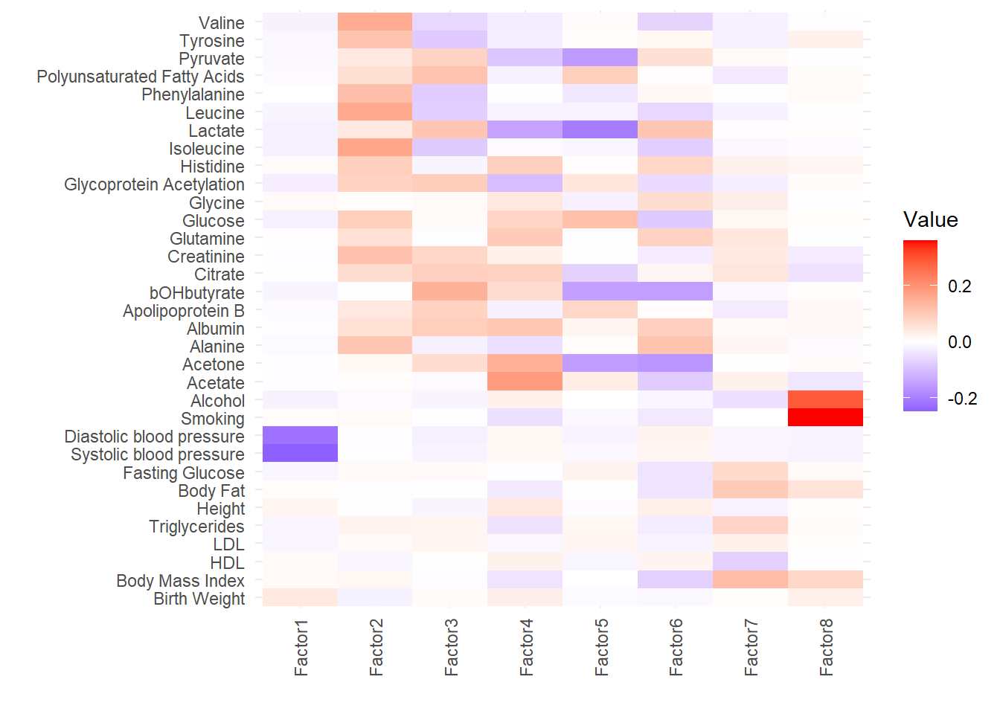
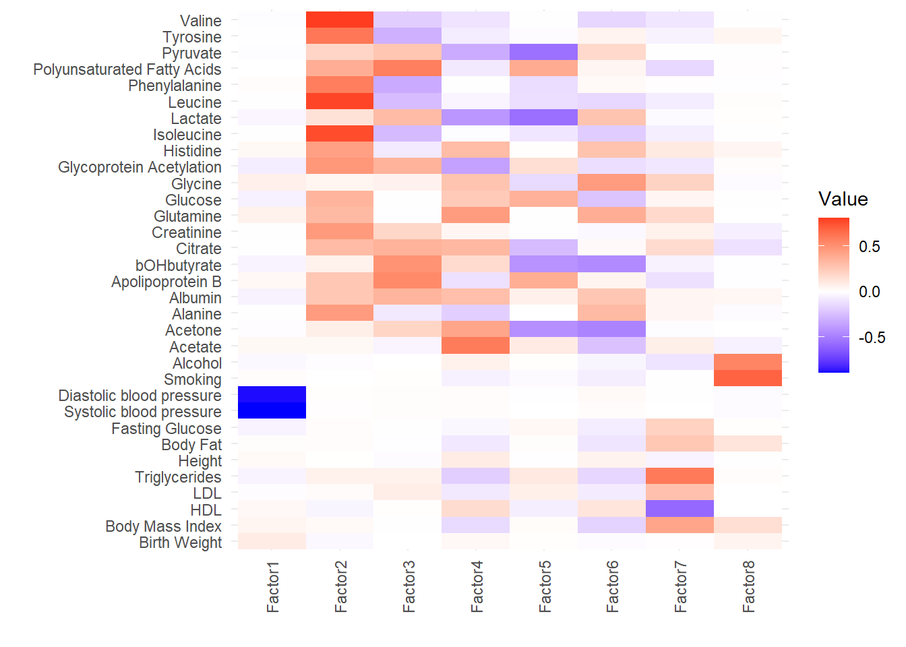
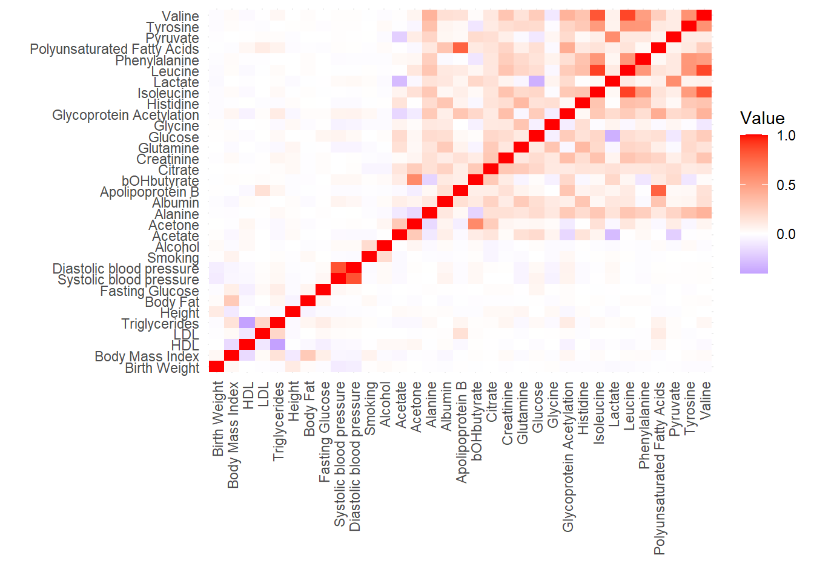

Last updated: 2024-11-20
Checks: 7 0
Knit directory: mvmr_website/
This reproducible R Markdown analysis was created with workflowr (version 1.7.1). The Checks tab describes the reproducibility checks that were applied when the results were created. The Past versions tab lists the development history.
Great! Since the R Markdown file has been committed to the Git repository, you know the exact version of the code that produced these results.
Great job! The global environment was empty. Objects defined in the global environment can affect the analysis in your R Markdown file in unknown ways. For reproduciblity it’s best to always run the code in an empty environment.
The command set.seed(20221205) was run prior to running
the code in the R Markdown file. Setting a seed ensures that any results
that rely on randomness, e.g. subsampling or permutations, are
reproducible.
Great job! Recording the operating system, R version, and package versions is critical for reproducibility.
Nice! There were no cached chunks for this analysis, so you can be confident that you successfully produced the results during this run.
Great job! Using relative paths to the files within your workflowr project makes it easier to run your code on other machines.
Great! You are using Git for version control. Tracking code development and connecting the code version to the results is critical for reproducibility.
The results in this page were generated with repository version 6429979. See the Past versions tab to see a history of the changes made to the R Markdown and HTML files.
Note that you need to be careful to ensure that all relevant files for
the analysis have been committed to Git prior to generating the results
(you can use wflow_publish or
wflow_git_commit). workflowr only checks the R Markdown
file, but you know if there are other scripts or data files that it
depends on. Below is the status of the Git repository when the results
were generated:
working directory clean
Note that any generated files, e.g. HTML, png, CSS, etc., are not included in this status report because it is ok for generated content to have uncommitted changes.
These are the previous versions of the repository in which changes were
made to the R Markdown (analysis/realdata.Rmd) and HTML
(docs/realdata.html) files. If you’ve configured a remote
Git repository (see ?wflow_git_remote), click on the
hyperlinks in the table below to view the files as they were in that
past version.
| File | Version | Author | Date | Message |
|---|---|---|---|---|
| Rmd | 6429979 | Nathan LaPierre | 2024-11-19 | updated rsparsepro correlated pleiotropy sim results and real data with the ones where susie/ctwas is used for the final regression |
| Rmd | 7800bcd | Nathan LaPierre | 2024-11-19 | added real data results for rsparsepro and rescale_z |
| html | 7800bcd | Nathan LaPierre | 2024-11-19 | added real data results for rsparsepro and rescale_z |
| Rmd | ca5bf6e | Nathan LaPierre | 2024-08-20 | added z-scores and R heatmaps |
| html | ca5bf6e | Nathan LaPierre | 2024-08-20 | added z-scores and R heatmaps |
| Rmd | f6a53cb | Nathan LaPierre | 2024-08-12 | added real data lipoprotein subfractions results, updated questions / in-progress on main page |
| html | f6a53cb | Nathan LaPierre | 2024-08-12 | added real data lipoprotein subfractions results, updated questions / in-progress on main page |
| Rmd | 373c87c | Nathan LaPierre | 2024-08-09 | added state of the project, as well as details on real data |
| html | 373c87c | Nathan LaPierre | 2024-08-09 | added state of the project, as well as details on real data |
| Rmd | df92d98 | Nathan LaPierre | 2024-07-05 | added new FAMR simulations, and updated real data results with annihilator mode |
| html | df92d98 | Nathan LaPierre | 2024-07-05 | added new FAMR simulations, and updated real data results with annihilator mode |
| Rmd | d600faa | Nathan LaPierre | 2024-07-01 | added page for real data analysis |
| html | d600faa | Nathan LaPierre | 2024-07-01 | added page for real data analysis |
In order to assess the performance of FAMR in a real data setting, we performed a high-dimensional / multi-variable Mendelian Randomization (MR) analysis of the effect of various metabolic and anthropometric traits on several complex diseases (coronary artery disease, stroke, type 2 diabetes, and asthma).
Summary statistics for the exposure traits were obtained mostly from the UK Biobank while the outcome traits were obtained from other sources, so the analysis is two-sample MR. All summary statistics were obtained from the IEU Open GWAS website.
The 33 exposure traits chosen are the union of the 20 exposure traits analyzed by Karjalainen et al in their MR analysis and those analyzed by Morrison et al in their analysis. We excluded Glycerol because there is no large (>100k samples) dataset available on the IEU Open GWAS portal. We also included Apolipoprotein B (ApoB) and Poly-Unsaturated Fatty Acids (PUFA) as these are known to play a causal role in coronary artery disease (CAD).
Morrison et al provide a helpful table of which of the exposures they analyzed are expected to affect each of the outcomes based on literature support.
Here are the exposures used in the analysis:
sort(unique(dat$Exposure)) [1] "3-hydroxybutyrate" "Acetate"
[3] "Acetone" "Alanine"
[5] "Albumin" "Alcohol"
[7] "Apolipoprotein B" "Birth Weight (BW)"
[9] "Body Fat" "Body Mass Index"
[11] "Citrate" "Creatinine"
[13] "Diastolic Blood Pressure" "Fasting Glucose"
[15] "Glucose" "Glutamine"
[17] "Glycine" "Glycoprotein acetylation"
[19] "Height" "High Density Lipoprotein (HDL)"
[21] "Histidine" "Isoleucine"
[23] "Lactate" "Leucine"
[25] "Low Density Lipoprotein (LDL)" "Phenylalanine"
[27] "Polyunsaturated Fatty Acids (PUFA)" "Pyruvate"
[29] "Smoking" "Systolic Blood Pressure"
[31] "Triglycerides" "Tyrosine"
[33] "Valine" Preprocessing the data consisted of the following steps:
For each exposure, we centered 1 Mb windows around each SNP with a p-value of less than \(5*10^{-8}\) (standard genome-wide significance).
We then merged these regions across all exposures, e.g. overlapping regions were merged together.
We obtained the LD matrix of the SNPs in each of these regions using individual-level data from the UK Biobank.
SNPs that were not in the UK Biobank, had minor allele frequency below 0.01, were multi-allelic, had an NA value, or were in the Human Leukocyte Antigen (HLA) region were filtered out.
Due to the high memory requirements, we performed LD clumping to reduce the total number of SNPs, with a threshold of \(|r|=0.1\). In particular, SNPs were sorted by increasing p-value, and SNPs with abs(LD) greater than 0.1 with a SNP with a stronger p-value were removed. This also improves the performance of most factor analysis methods and MVMR methods in simulations.
We ran FAMR and various other MVMR methods (see table below) on this data. We also ran univariate IVW MR (“ivw.univar”) on each exposure-outcome pair. For FAMR, we ran it both with and without regressing out (“annihilating”) the learned factors from the exposures.
Consult the following list for trait names vs their codes. I have tried to put the trait name in the results below where possible, but this will be useful in cases where I forgot or it was impractical.
Trait Name Trait ID
Alcohol ieu-b-73
Birth Weight (BW) ieu-a-1083
Body Fat ieu-a-999
Body Mass Index ieu-a-2
Diastolic Blood Pressure ieu-b-39
Fasting Glucose ieu-b-113
Height ieu-a-89
High Density Lipoprotein (HDL) ieu-a-299
Low Density Lipoprotein (LDL) ieu-a-300
Smoking ieu-b-4877
Systolic Blood Pressure ieu-b-38
Triglycerides ieu-a-302
Asthma ebi-a-GCST006862
Coronary Artery Disease (CAD) ebi-a-GCST005195
Stroke ebi-a-GCST005838
Type 2 Diabetes ieu-a-26
Acetate met-d-Acetate
Acetone met-d-Acetone
Alanine met-d-Ala
Albumin met-d-Albumin
3-hydroxybutyrate met-d-bOHbutyrate
Citrate met-d-Citrate
Creatinine met-d-Creatinine
Glucose met-d-Glucose
Glutamine met-d-Gln
Glycoprotein acetylation met-d-GlycA
Glycine met-d-Gly
Histidine met-d-His
Isoleucine met-d-Ile
Lactate met-d-Lactate
Leucine met-d-Leu
Phenylalanine met-d-Phe
Pyruvate met-d-Pyruvate
Tyrosine met-d-Tyr
Valine met-d-Val
Apolipoprotein B met-d-ApoB
Polyunsaturated Fatty Acids met-d-PUFAHere we discuss the number of independent loci and heritability of each trait, as well as its most genetically-correlated traits.
Across all 33 exposure traits, 2530 1 Mb loci were identified (avg. about 77 per trait), and there were 726 independent loci after merging overlapping loci. Excluding blood pressure and height, which were by far the most polygenic, there were 1097 regions across 30 traits (avg. about 37 per trait).=, and there were 477 independent loci after merging overlapping loci.
Here are the number of independent 1 Mb loci per trait:
- 522 regions_combined/ieu-b-39_regions.txt (Diastolic blood pressure)
- 495 regions_combined/ieu-b-38_regions.txt (Systolic blood pressure)
- 416 regions_combined/ieu-a-89_regions.txt (Height)
- 103 regions_combined/ieu-b-4877_regions.txt (Smoking status)
- 86 regions_combined/ieu-a-299_regions.txt (HDL cholesterol)
- 83 regions_combined/ieu-a-2_regions.txt (Body mass index)
- 69 regions_combined/met-d-Creatinine_regions.txt (Creatinine)
- 67 regions_combined/ieu-a-300_regions.txt (LDL cholesterol)
- 55 regions_combined/met-d-PUFA_regions.txt (Polyunsaturated fatty acids)
- 55 regions_combined/ieu-a-302_regions.txt (Triglycerides)
- 53 regions_combined/ieu-a-1083_regions.txt (Birth weight)
- 48 regions_combined/met-d-GlycA_regions.txt (Glycoprotein acetylation)
- 47 regions_combined/met-d-Gln_regions.txt (Glutamine)
- 46 regions_combined/met-d-ApoB_regions.txt (Apolipoprotein B)
- 41 regions_combined/met-d-Gly_regions.txt (Glycine)
- 39 regions_combined/ieu-b-73_regions.txt (Alcohol intake)
- 32 regions_combined/met-d-Citrate_regions.txt (Citrate)
- 32 regions_combined/met-d-Albumin_regions.txt (Albumin)
- 32 regions_combined/met-d-Ala_regions.txt (Alanine)
- 28 regions_combined/met-d-Tyr_regions.txt (Tyrosine)
- 23 regions_combined/met-d-Glucose_regions.txt (Glucose)
- 21 regions_combined/ieu-b-113_regions.txt (Fasting glucose)
- 19 regions_combined/met-d-Pyruvate_regions.txt (Pyruvate)
- 18 regions_combined/met-d-Val_regions.txt (Valine)
- 15 regions_combined/met-d-Leu_regions.txt (Leucine)
- 15 regions_combined/met-d-His_regions.txt (Histidine)
- 14 regions_combined/met-d-bOHbutyrate_regions.txt (bOHbutyrate)
- 11 regions_combined/met-d-Acetone_regions.txt (Acetone)
- 10 regions_combined/met-d-Lactate_regions.txt (Lactate)
- 10 regions_combined/ieu-a-999_regions.txt (Body fat)
- 9 regions_combined/met-d-Acetate_regions.txt (Acetate)
- 8 regions_combined/met-d-Phe_regions.txt (Phenylalanine)
- 8 regions_combined/met-d-Ile_regions.txt (Isoleucine)We used the HDL package to compute heritability and genetic correlations.
Below is the heritability of each trait (including the outcomes). As you can see, except for the highly polygenic blood pressure and height traits, all others have heritabilities between \(1\%\) and \(27\%\), with most being in the \(5\%\) to \(18\%\) range. The median heritability is about \(9\%\).
trait h2
ieu-b-38 (SBP) 0.7654
ieu-b-39 (DBP) 0.7616
ieu-a-89 (Height) 0.5236
ieu-b-4877 (Smoking) 0.2612
met-d-Gly (Glycine) 0.2506
ieu-a-2 (BMI) 0.1788
met-d-GlycA (Glyc. Acet.) 0.1742
ieu-b-73 (Alc) 0.1709
ebi-a-GCST005195 (CAD) 0.1667
met-d-Creatinine 0.1560
met-d-PUFA 0.1524
met-d-Gln (Glutamine) 0.1345
ieu-a-1083 (Birth Wt.) 0.1288
met-d-Tyr (Tyrosine) 0.1133
met-d-ApoB 0.1097
met-d-Citrate 0.1031
met-d-Albumin 0.0965
met-d-Ala (Alanine) 0.0900
met-d-Val (Valine) 0.0885
ieu-a-302 (Trigly.) 0.0877
ieu-a-299 (HDL) 0.0840
met-d-Leu (Leucine) 0.0704
met-d-Glucose 0.0695
met-d-Pyruvate 0.0649
met-d-bOHbutyrate 0.0559
met-d-Ile (Isoleuc.) 0.0547
ieu-a-300 (LDL) 0.0537
met-d-Acetone 0.0524
met-d-Lactate 0.0516
met-d-Acetate 0.0479
met-d-Phe (Phenylal.) 0.0459
met-d-His (Histidine) 0.0385
ebi-a-GCST006862 (Asthma) 0.0342
ieu-a-999 (Body fat) 0.0281
ieu-a-26 (T2D) 0.0243
ebi-a-GCST005838 (Stroke) 0.0235
ieu-b-113 (Fast. Gluc.) 0.0145Below are the genetic correlations between traits computed by the HDL package.
Most of them look reasonable, but some are obviously over-estimates (e.g. some correlations are over 1). One big surprise is that HDL and LDL are hardly correlated.
About half of the traits have below 50% correlation with all other traits - Most of the non-BCAA amino acids - Ketone bodies - Glycolysis-related metabolites - Fluid balance traits
The other roughly half of traits form small highly-correlated clusters. Examples: - BCAAs (Valine, Leucine, Isoleucine) - LDL, ApoB, and PUFA - Triglycerides and GlycA - T2D, Fasting Glucose, Glucose - BMI and Body Fat - Systolic and Diastolic blood pressure - CAD and Stroke
Here are the top five correlations for each trait:
Genetic correlations for ebi-a-GCST005195:
trait corr
1 ebi-a-GCST005838 0.7797
2 ieu-a-26 0.4230
3 ieu-b-38 0.3812
4 ieu-a-299 -0.3723
5 ieu-a-999 0.3710
Genetic correlations for ebi-a-GCST005838:
trait corr
1 ebi-a-GCST005195 0.7797
2 ieu-a-26 0.7256
3 ieu-b-38 0.5899
4 ieu-b-113 0.5394
5 ieu-a-999 0.5265
Genetic correlations for ebi-a-GCST006862:
trait corr
1 ieu-a-26 0.2385
2 ieu-a-999 0.1635
3 met-d-Lactate 0.1595
4 met-d-Acetate -0.1492
5 met-d-Acetone -0.1365
Genetic correlations for ieu-a-1083:
trait corr
1 ieu-a-89 0.4254000
2 ieu-a-26 -0.2863000
3 ieu-b-38 -0.2067000
4 ebi-a-GCST005838 -0.1901000
5 ieu-b-113 -0.1881000
Genetic correlations for ieu-a-26:
trait corr
1 ieu-b-113 1.1869
2 ebi-a-GCST005838 0.7256
3 met-d-Val 0.6845
4 met-d-Ile 0.6437
5 met-d-Leu 0.5972
Genetic correlations for ieu-a-299:
trait corr
1 ieu-a-302 -0.6848
2 met-d-Leu -0.5278
3 met-d-Ile -0.5216
4 met-d-Val -0.4811
5 met-d-GlycA -0.4504
Genetic correlations for ieu-a-2:
trait corr
1 ieu-a-999 1.0984
2 ieu-a-26 0.4698
3 met-d-Ile 0.3667
4 ieu-b-113 0.3641
5 met-d-Val 0.3465
Genetic correlations for ieu-a-300:
trait corr
1 met-d-ApoB 1.1036
2 met-d-PUFA 0.8297
3 ieu-a-302 0.4555
4 met-d-GlycA 0.3966
5 ebi-a-GCST005195 0.2779
Genetic correlations for ieu-a-302:
trait corr
1 met-d-GlycA 0.7566
2 ieu-a-299 -0.6848
3 met-d-Val 0.6040
4 met-d-Ile 0.6016
5 met-d-Leu 0.5518
Genetic correlations for ieu-a-89:
trait corr
1 ieu-a-1083 0.4254
2 met-d-Lactate -0.1501
3 met-d-Acetate 0.1385
4 met-d-GlycA -0.1158
5 ieu-a-999 -0.1154
Genetic correlations for ieu-a-999:
trait corr
1 ieu-a-2 1.0984
2 ieu-a-26 0.5278
3 ebi-a-GCST005838 0.5265
4 met-d-GlycA 0.5159
5 met-d-Phe 0.5021
Genetic correlations for ieu-b-113:
trait corr
1 met-d-Glucose 1.3238
2 ieu-a-26 1.1870
3 ebi-a-GCST005838 0.5394
4 met-d-Ala 0.3701
5 ieu-a-2 0.3641
Genetic correlations for ieu-b-38:
trait corr
1 ieu-b-39 0.8183
2 ebi-a-GCST005838 0.5899
3 ebi-a-GCST005195 0.3812
4 ieu-a-26 0.2913
5 ieu-b-113 0.2854
Genetic correlations for ieu-b-39:
trait corr
1 ieu-b-38 0.8183
2 ebi-a-GCST005838 0.5168
3 ebi-a-GCST005195 0.3087
4 ieu-a-26 0.2087
5 ieu-a-1083 -0.1685
Genetic correlations for ieu-b-4877:
trait corr
1 ieu-b-73 0.4361
2 ebi-a-GCST005838 0.3304
3 ebi-a-GCST005195 0.2555
4 ieu-a-999 0.2368
5 met-d-GlycA 0.2131
Genetic correlations for ieu-b-73:
trait corr
1 ieu-b-4877 0.4361000
2 ieu-a-299 0.2524000
3 met-d-Acetone 0.2249000
4 met-d-Citrate -0.2223000
5 met-d-Acetate 0.1415000
Genetic correlations for met-d-Acetate:
trait corr
1 met-d-Lactate -0.5745
2 met-d-GlycA -0.5055
3 ebi-a-GCST005838 -0.4637
4 ieu-a-999 -0.4556
5 ieu-a-302 -0.4030
Genetic correlations for met-d-Acetone:
trait corr
1 met-d-bOHbutyrate 0.5463
2 met-d-GlycA -0.3522
3 ieu-a-302 -0.3022
4 met-d-Ala -0.2856
5 met-d-Acetate 0.2843
Genetic correlations for met-d-Ala:
trait corr
1 met-d-Ile 0.4868
2 met-d-Leu 0.4491
3 met-d-Val 0.4450
4 ieu-a-26 0.4261
5 ieu-b-113 0.3701
Genetic correlations for met-d-Albumin:
trait corr
1 ieu-a-999 -0.4238
2 met-d-Phe -0.3036
3 ieu-a-2 -0.2880
4 ebi-a-GCST005838 -0.2476
5 met-d-His 0.1864
Genetic correlations for met-d-ApoB:
trait corr
1 ieu-a-300 1.1036
2 met-d-PUFA 0.7652
3 ieu-a-302 0.4816
4 met-d-GlycA 0.2698
5 ebi-a-GCST005838 -0.2280
Genetic correlations for met-d-bOHbutyrate:
trait corr
1 met-d-Acetone 0.5463
2 ieu-a-999 0.2629
3 met-d-Lactate 0.2563
4 met-d-Ala -0.2461
5 met-d-Tyr -0.2204
Genetic correlations for met-d-Citrate:
trait corr
1 met-d-Creatinine 0.2538
2 ieu-b-73 -0.2223
3 ieu-b-4877 -0.1716
4 met-d-Acetone 0.1354
5 met-d-bOHbutyrate 0.1317
Genetic correlations for met-d-Creatinine:
trait corr
1 ieu-a-302 0.3592
2 met-d-GlycA 0.2742
3 met-d-Citrate 0.2539
4 ieu-a-299 -0.2244
5 met-d-Ile 0.2223
Genetic correlations for met-d-Gln:
trait corr
1 met-d-His 0.4011
2 ieu-a-999 -0.2858
3 met-d-Acetate 0.2532
4 ieu-a-302 -0.2433
5 met-d-Lactate -0.2381
Genetic correlations for met-d-Glucose:
trait corr
1 ieu-b-113 1.3238
2 ieu-a-26 0.5720
3 met-d-Lactate -0.2855
4 met-d-GlycA 0.2739
5 ieu-a-999 0.2482
Genetic correlations for met-d-GlycA:
trait corr
1 ieu-a-302 0.7566
2 ieu-a-999 0.5159
3 met-d-Acetate -0.5055
4 ieu-a-26 0.4640
5 ieu-a-299 -0.4504
Genetic correlations for met-d-Gly:
trait corr
1 ieu-a-26 -0.3062
2 ieu-a-999 -0.2387
3 ieu-b-113 -0.2232
4 met-d-Val -0.2222
5 met-d-Gln 0.1838
Genetic correlations for met-d-His:
trait corr
1 met-d-Gln 0.4011
2 ebi-a-GCST005838 -0.2631
3 met-d-Ala 0.2453
4 met-d-Lactate -0.2362
5 ieu-a-999 -0.2301
Genetic correlations for met-d-Ile:
trait corr
1 met-d-Leu 0.9522
2 met-d-Val 0.9351
3 ieu-a-26 0.6437
4 ieu-a-302 0.6016
5 ieu-a-299 -0.5216
Genetic correlations for met-d-Lactate:
trait corr
1 met-d-Acetate -0.5745
2 met-d-Pyruvate 0.3740
3 ieu-a-26 0.3611
4 ieu-a-302 0.3313
5 met-d-Glucose -0.2855
Genetic correlations for met-d-Leu:
trait corr
1 met-d-Ile 0.9522
2 met-d-Val 0.9275
3 ieu-a-26 0.5972
4 ieu-a-302 0.5518
5 ieu-a-299 -0.5278
Genetic correlations for met-d-Phe:
trait corr
1 met-d-Ile 0.5117
2 ieu-a-999 0.5021
3 met-d-Tyr 0.4812
4 ieu-a-26 0.4648
5 met-d-Leu 0.4629
Genetic correlations for met-d-PUFA:
trait corr
1 ieu-a-300 0.8297
2 met-d-ApoB 0.7652
3 ieu-a-302 0.5174
4 met-d-GlycA 0.3093
5 ieu-a-299 0.2889
Genetic correlations for met-d-Pyruvate:
trait corr
1 met-d-Lactate 0.3740
2 ebi-a-GCST005838 0.2643
3 met-d-Acetate -0.2584
4 met-d-GlycA 0.2499
5 ieu-a-999 0.2409
Genetic correlations for met-d-Tyr:
trait corr
1 met-d-Phe 0.4812
2 met-d-Ile 0.3482
3 met-d-Val 0.3107
4 met-d-Ala 0.3042
5 ieu-a-26 0.3029
Genetic correlations for met-d-Val:
trait corr
1 met-d-Ile 0.9351
2 met-d-Leu 0.9275
3 ieu-a-26 0.6845
4 ieu-a-302 0.6041
5 ieu-a-299 -0.4811The results table is below, sorted by decreasing average probability (across all methods) of the exposure having a causal effect on the outcome. For FAMR, the probability of being causal is given by the posterior inclusion probability (PIP). For other methods, we performed false discovery rate (FDR) control across all exposures for each outcome trait using the Q-value method. The probability of causality was computed as 1 minus the Q-value.
In general, in line with simulation results, we observed that FAMR is a bit more conservative than IVW. It occasionally misses a trait pair that IVW gets that has good evidence according to Morrison et al. However, it also avoids some likely spurious positives that IVW picks up. It should be kept in mind that some of the positives identified by FAMR are factors, and by examining the factor loadings we can see that some of the exposure-outcome pairs that are likely causal are loaded on these factors.
In turn, univariate IVW has more positives than MVMR-IVW. Part of this is because it does not control for other exposures. As a classic illustration, univariate IVW finds that HDL cholesterol causes CAD – a finding that is considered a false positive – while no MVMR methods do, including FAMR.
knitr::kable(dat)| Exposure | Outcome | famr_none | famr_gfa | ivw | robust | ivw.univar |
|---|---|---|---|---|---|---|
| Fasting Glucose | Type 2 Diabetes | 1.0000000 | 1.0000000 | 0.9999988 | 0.9947333 | 0.9627287 |
| Low Density Lipoprotein (LDL) | Coronary Artery Disease (CAD) | 1.0000000 | 0.4992821 | 1.0000000 | 0.9930075 | 1.0000000 |
| Smoking | Coronary Artery Disease (CAD) | 1.0000000 | 0.4857446 | 0.9967898 | 0.9995172 | 0.9999993 |
| Triglycerides | Coronary Artery Disease (CAD) | 1.0000000 | 0.5359229 | 0.9988733 | 0.8062264 | 1.0000000 |
| Systolic Blood Pressure | Coronary Artery Disease (CAD) | 1.0000000 | 0.0475424 | 1.0000000 | 0.9999999 | 1.0000000 |
| Systolic Blood Pressure | Stroke | 1.0000000 | 0.0155665 | 1.0000000 | 0.9999929 | 1.0000000 |
| Body Mass Index | Type 2 Diabetes | 0.7169542 | 0.0622641 | 0.9909150 | 0.9571643 | 0.9988323 |
| Birth Weight (BW) | Type 2 Diabetes | 0.4900284 | 0.2204279 | 0.9999988 | 0.9975059 | 0.9689025 |
| Apolipoprotein B | Type 2 Diabetes | 0.6181548 | 0.1739885 | 0.9749284 | 0.8489845 | 0.9308568 |
| Systolic Blood Pressure | Type 2 Diabetes | 1.0000000 | 0.4546139 | 0.4590372 | 0.4078020 | 0.9999943 |
| Low Density Lipoprotein (LDL) | Stroke | 0.3985737 | 0.1403582 | 0.8046237 | 0.7746632 | 0.9903733 |
| Glucose | Coronary Artery Disease (CAD) | 0.6812049 | 0.4352577 | 0.3220336 | 0.7912540 | 0.8444897 |
| Body Mass Index | Stroke | 0.6645278 | 0.0196113 | 0.5929153 | 0.6517574 | 0.9974061 |
| Smoking | Stroke | 0.5758015 | 0.0392995 | 0.5929153 | 0.6517574 | 0.9964859 |
| High Density Lipoprotein (HDL) | Type 2 Diabetes | 0.2895377 | 0.1415007 | 0.7450817 | 0.6827559 | 0.9827281 |
| Albumin | Coronary Artery Disease (CAD) | 0.6668533 | 0.0356507 | 0.5602308 | 0.7912540 | 0.7800716 |
| Polyunsaturated Fatty Acids (PUFA) | Coronary Artery Disease (CAD) | 0.3814837 | 0.0289711 | 0.9885194 | 0.2254419 | 0.9819322 |
| Lactate | Coronary Artery Disease (CAD) | 0.2709803 | 0.0879443 | 0.6053010 | 0.7642847 | 0.8641103 |
| Apolipoprotein B | Coronary Artery Disease (CAD) | 0.0470533 | 0.9998899 | 0.0742338 | 0.4117507 | 1.0000000 |
| Glucose | Type 2 Diabetes | 0.2882089 | 0.0690694 | 0.4590372 | 0.7459946 | 0.9044883 |
| Glycine | Coronary Artery Disease (CAD) | 0.3214334 | 0.1301960 | 0.3345779 | 0.8062264 | 0.8641103 |
| Height | Type 2 Diabetes | 0.2417396 | 0.0760660 | 0.9965720 | 0.9971356 | 0.0911413 |
| Body Mass Index | Coronary Artery Disease (CAD) | 0.4831288 | 0.3355652 | 0.0742338 | 0.4827284 | 0.9999999 |
| Valine | Coronary Artery Disease (CAD) | 0.0862445 | 0.0638189 | 0.5981750 | 0.7400847 | 0.8455782 |
| Triglycerides | Type 2 Diabetes | 0.6768530 | 0.6503851 | 0.4590372 | 0.1341114 | 0.3940797 |
| Diastolic Blood Pressure | Stroke | 0.3400162 | 0.4875295 | 0.3708722 | 0.0831260 | 1.0000000 |
| Apolipoprotein B | Stroke | 0.0950344 | 0.1968158 | 0.5929153 | 0.4433595 | 0.8592485 |
| High Density Lipoprotein (HDL) | Coronary Artery Disease (CAD) | 0.2813578 | 0.2194430 | 0.6053010 | 0.0696489 | 0.9996810 |
| Diastolic Blood Pressure | Coronary Artery Disease (CAD) | 0.4759682 | 0.5427724 | 0.0742338 | 0.0462079 | 1.0000000 |
| Alanine | Type 2 Diabetes | 0.5130477 | 0.0620784 | 0.4590372 | 0.1255281 | 0.8587142 |
| High Density Lipoprotein (HDL) | Stroke | 0.0476832 | 0.0142922 | 0.5929153 | 0.4398289 | 0.8641591 |
| Fasting Glucose | Coronary Artery Disease (CAD) | 0.2382522 | 0.0962193 | 0.3345779 | 0.4117507 | 0.8641103 |
| Low Density Lipoprotein (LDL) | Type 2 Diabetes | 0.2909146 | 0.2991014 | 0.4590372 | 0.1366035 | 0.7562706 |
| Valine | Type 2 Diabetes | 0.7158708 | 0.0601868 | 0.2271217 | 0.1366035 | 0.7866321 |
| Polyunsaturated Fatty Acids (PUFA) | Type 2 Diabetes | 0.1739750 | 0.0586914 | 0.5896329 | 0.4078020 | 0.6510959 |
| Acetate | Coronary Artery Disease (CAD) | 0.4769970 | 0.2080816 | 0.0742338 | 0.2254419 | 0.8641103 |
| Height | Coronary Artery Disease (CAD) | 0.4031744 | 0.3079329 | 0.0742338 | 0.0462079 | 0.9999855 |
| Acetone | Type 2 Diabetes | 0.2637977 | 0.0607823 | 0.5896329 | 0.4668557 | 0.3940797 |
| Valine | Stroke | 0.0701758 | 0.0141008 | 0.6237043 | 0.6124978 | 0.4404756 |
| Isoleucine | Coronary Artery Disease (CAD) | 0.1031429 | 0.1292321 | 0.2698482 | 0.4117507 | 0.8444897 |
| Smoking | Type 2 Diabetes | 0.4451097 | 0.0611763 | 0.2006473 | 0.0797565 | 0.9689025 |
| Creatinine | Stroke | 0.1062808 | 0.0193908 | 0.5754631 | 0.6262602 | 0.4147477 |
| Albumin | Type 2 Diabetes | 0.2172087 | 0.0586893 | 0.5896329 | 0.7459946 | 0.1221709 |
| Glycoprotein acetylation | Type 2 Diabetes | 0.2079340 | 0.0589765 | 0.5896329 | 0.7459946 | 0.0911413 |
| 3-hydroxybutyrate | Stroke | 0.0503547 | 0.0245119 | 0.5929153 | 0.6262602 | 0.3467083 |
| Glycoprotein acetylation | Coronary Artery Disease (CAD) | 0.1013226 | 0.3753428 | 0.0742338 | 0.2254419 | 0.8439349 |
| Diastolic Blood Pressure | Type 2 Diabetes | 0.3277418 | 0.0923476 | 0.0734237 | 0.1255281 | 0.9977521 |
| Birth Weight (BW) | Coronary Artery Disease (CAD) | 0.2046995 | 0.0680319 | 0.2920812 | 0.1665383 | 0.8641103 |
| Glycoprotein acetylation | Stroke | 0.0789774 | 0.0165536 | 0.6454787 | 0.7746632 | 0.0256565 |
| Fasting Glucose | Stroke | 0.0479541 | 0.0199766 | 0.5929153 | 0.4398289 | 0.4404756 |
| Leucine | Type 2 Diabetes | 0.2996648 | 0.0706543 | 0.2006473 | 0.1255281 | 0.8029487 |
| Smoking | Asthma | 0.0156429 | 0.0000223 | 0.7046357 | 0.6498876 | 0.1132176 |
| Lactate | Type 2 Diabetes | 0.1431220 | 0.1667676 | 0.4590372 | 0.4517228 | 0.2061422 |
| Body Fat | Type 2 Diabetes | 0.2132178 | 0.1053063 | 0.0682795 | 0.1255281 | 0.8587142 |
| Histidine | Stroke | 0.0797678 | 0.0175693 | 0.5929153 | 0.2644059 | 0.4147477 |
| Body Fat | Stroke | 0.1117001 | 0.0192282 | 0.3708722 | 0.4398289 | 0.4147477 |
| Histidine | Type 2 Diabetes | 0.1395259 | 0.0723868 | 0.2271217 | 0.1366035 | 0.7562706 |
| Glutamine | Coronary Artery Disease (CAD) | 0.2457836 | 0.1938752 | 0.0742338 | 0.5735238 | 0.2187513 |
| Alcohol | Stroke | 0.0457506 | 0.0244930 | 0.2351251 | 0.0831260 | 0.9148137 |
| Glycine | Type 2 Diabetes | 0.4058350 | 0.1369410 | 0.2271217 | 0.1366035 | 0.3940797 |
| Triglycerides | Stroke | 0.0457418 | 0.0238666 | 0.3708722 | 0.3846305 | 0.4147477 |
| Lactate | Stroke | 0.0464543 | 0.0159179 | 0.2919419 | 0.4398289 | 0.4404756 |
| Creatinine | Type 2 Diabetes | 0.1406406 | 0.3666628 | 0.4574460 | 0.1366035 | 0.1221709 |
| Citrate | Stroke | 0.0491052 | 0.0140720 | 0.3991966 | 0.3389251 | 0.4147477 |
| Leucine | Stroke | 0.0663630 | 0.0222432 | 0.3887022 | 0.2644059 | 0.4147477 |
| Alanine | Stroke | 0.0455658 | 0.0450031 | 0.3708722 | 0.3389251 | 0.3398597 |
| 3-hydroxybutyrate | Coronary Artery Disease (CAD) | 0.0489138 | 0.0780576 | 0.0855476 | 0.0600963 | 0.8641103 |
| Glucose | Stroke | 0.0475948 | 0.0143315 | 0.3708722 | 0.2760634 | 0.4147477 |
| Pyruvate | Stroke | 0.1950946 | 0.0165120 | 0.2421389 | 0.2443594 | 0.4225246 |
| Body Fat | Coronary Artery Disease (CAD) | 0.1152393 | 0.0276283 | 0.2101540 | 0.6005793 | 0.1098881 |
| Body Mass Index | Asthma | 0.2149005 | 0.0001361 | 0.5017438 | 0.2159729 | 0.1132176 |
| Polyunsaturated Fatty Acids (PUFA) | Stroke | 0.0754199 | 0.0171730 | 0.3028536 | 0.2281794 | 0.4147477 |
| Histidine | Coronary Artery Disease (CAD) | 0.0704106 | 0.0741445 | 0.3345779 | 0.4518371 | 0.0814085 |
| Leucine | Coronary Artery Disease (CAD) | 0.0599744 | 0.0292674 | 0.0742338 | 0.0462079 | 0.7981275 |
| Citrate | Type 2 Diabetes | 0.1892833 | 0.0671768 | 0.1823054 | 0.1341114 | 0.3940797 |
| Tyrosine | Type 2 Diabetes | 0.1632928 | 0.1070265 | 0.2271217 | 0.1255281 | 0.3165463 |
| Phenylalanine | Stroke | 0.2348586 | 0.1442658 | 0.0494322 | 0.0831260 | 0.4147477 |
| Isoleucine | Type 2 Diabetes | 0.2929083 | 0.0600197 | 0.0682795 | 0.0797565 | 0.3940797 |
| Creatinine | Coronary Artery Disease (CAD) | 0.1064093 | 0.0289827 | 0.0742338 | 0.4117507 | 0.2187513 |
| Glutamine | Type 2 Diabetes | 0.1437745 | 0.0698389 | 0.4590372 | 0.0493954 | 0.1031584 |
| Alcohol | Coronary Artery Disease (CAD) | 0.0418576 | 0.0716592 | 0.3345779 | 0.0462079 | 0.3073464 |
| Acetone | Stroke | 0.0580238 | 0.0579645 | 0.0494322 | 0.2212693 | 0.4147477 |
| Creatinine | Asthma | 0.0281747 | 0.0000238 | 0.0170073 | 0.6498876 | 0.0594927 |
| Pyruvate | Type 2 Diabetes | 0.1378645 | 0.1600516 | 0.2271217 | 0.1255281 | 0.0911413 |
| Height | Stroke | 0.1185802 | 0.0639008 | 0.0494322 | 0.0651921 | 0.4404756 |
| Isoleucine | Stroke | 0.0571686 | 0.0333959 | 0.1094336 | 0.0968527 | 0.4404756 |
| Phenylalanine | Type 2 Diabetes | 0.2778759 | 0.1166545 | 0.2006473 | 0.0493954 | 0.0911413 |
| 3-hydroxybutyrate | Type 2 Diabetes | 0.2708831 | 0.1085920 | 0.2006473 | 0.1255281 | 0.0271845 |
| Acetate | Type 2 Diabetes | 0.1520594 | 0.0587726 | 0.0482479 | 0.1366035 | 0.3165463 |
| Acetate | Stroke | 0.1162707 | 0.0367866 | 0.0494322 | 0.0831260 | 0.4147477 |
| Alanine | Coronary Artery Disease (CAD) | 0.0418891 | 0.0627892 | 0.2101540 | 0.1665383 | 0.2187513 |
| Tyrosine | Coronary Artery Disease (CAD) | 0.0414448 | 0.0319237 | 0.0742338 | 0.3084909 | 0.2199780 |
| Tyrosine | Asthma | 0.0215789 | 0.0000882 | 0.5017438 | 0.0196295 | 0.1132176 |
| Systolic Blood Pressure | Asthma | 0.0227040 | 0.0000673 | 0.3411170 | 0.1741061 | 0.1132176 |
| Phenylalanine | Coronary Artery Disease (CAD) | 0.0945482 | 0.0780697 | 0.0742338 | 0.1667379 | 0.2187513 |
| Albumin | Stroke | 0.1191569 | 0.0214899 | 0.0494322 | 0.0651921 | 0.3467083 |
| Citrate | Coronary Artery Disease (CAD) | 0.0532282 | 0.0296893 | 0.0742338 | 0.2254419 | 0.2151547 |
| Birth Weight (BW) | Stroke | 0.0675853 | 0.0175087 | 0.0043171 | 0.0651921 | 0.4147477 |
| Pyruvate | Coronary Artery Disease (CAD) | 0.0477269 | 0.0277356 | 0.0657467 | 0.3084909 | 0.0814085 |
| Acetone | Coronary Artery Disease (CAD) | 0.0670262 | 0.0320932 | 0.0742338 | 0.1135610 | 0.2187513 |
| Tyrosine | Stroke | 0.0454773 | 0.0258352 | 0.0494322 | 0.0298225 | 0.3467083 |
| Alcohol | Type 2 Diabetes | 0.1390903 | 0.0593950 | 0.0482479 | 0.0797565 | 0.1031584 |
| Triglycerides | Asthma | 0.0101741 | 0.0000237 | 0.2151785 | 0.0196295 | 0.1132176 |
| Glycine | Stroke | 0.0531707 | 0.0172586 | 0.0494322 | 0.1037572 | 0.1275271 |
| Birth Weight (BW) | Asthma | 0.0087177 | 0.0000298 | 0.0170073 | 0.1741061 | 0.1132176 |
| Glucose | Asthma | 0.0734995 | 0.0000253 | 0.0170073 | 0.0196295 | 0.1132176 |
| Glutamine | Stroke | 0.0586051 | 0.0164566 | 0.0494322 | 0.0831260 | 0.0075709 |
| Albumin | Asthma | 0.0646271 | 0.0000934 | 0.0170073 | 0.0196295 | 0.1132176 |
| Body Fat | Asthma | 0.0577181 | 0.0002453 | 0.0170073 | 0.0196295 | 0.1132176 |
| Pyruvate | Asthma | 0.0313252 | 0.0000637 | 0.0170073 | 0.0196295 | 0.1132176 |
| Diastolic Blood Pressure | Asthma | 0.0131256 | 0.0000248 | 0.0874958 | 0.0196295 | 0.0594927 |
| Fasting Glucose | Asthma | 0.0237170 | 0.0000664 | 0.0170073 | 0.0196295 | 0.1132176 |
| Isoleucine | Asthma | 0.0116350 | 0.0000446 | 0.0170073 | 0.0196295 | 0.1132176 |
| Height | Asthma | 0.0111413 | 0.0000286 | 0.0170073 | 0.0196295 | 0.1132176 |
| Acetone | Asthma | 0.0108082 | 0.0001268 | 0.0170073 | 0.0196295 | 0.1132176 |
| Glycine | Asthma | 0.0087793 | 0.0000230 | 0.0170073 | 0.0196295 | 0.1132176 |
| 3-hydroxybutyrate | Asthma | 0.0248875 | 0.0000273 | 0.0170073 | 0.0196295 | 0.0913189 |
| Leucine | Asthma | 0.0097726 | 0.0000278 | 0.0170073 | 0.0196295 | 0.0913189 |
| High Density Lipoprotein (HDL) | Asthma | 0.0192213 | 0.0000225 | 0.0170073 | 0.0196295 | 0.0762742 |
| Lactate | Asthma | 0.0160831 | 0.0000464 | 0.0170073 | 0.0196295 | 0.0762742 |
| Citrate | Asthma | 0.0259226 | 0.0001802 | 0.0170073 | 0.0196295 | 0.0594927 |
| Glycoprotein acetylation | Asthma | 0.0087948 | 0.0000428 | 0.0170073 | 0.0196295 | 0.0762742 |
| Acetate | Asthma | 0.0145136 | 0.0000224 | 0.0170073 | 0.0196295 | 0.0594927 |
| Histidine | Asthma | 0.0114954 | 0.0000257 | 0.0170073 | 0.0196295 | 0.0594927 |
| Low Density Lipoprotein (LDL) | Asthma | 0.0107381 | 0.0000258 | 0.0170073 | 0.0196295 | 0.0594927 |
| Phenylalanine | Asthma | 0.0091248 | 0.0000441 | 0.0170073 | 0.0196295 | 0.0594927 |
| Polyunsaturated Fatty Acids (PUFA) | Asthma | 0.0086106 | 0.0000842 | 0.0170073 | 0.0196295 | 0.0594927 |
| Glutamine | Asthma | 0.0085644 | 0.0000280 | 0.0170073 | 0.0196295 | 0.0594927 |
| Apolipoprotein B | Asthma | 0.0085319 | 0.0000227 | 0.0170073 | 0.0196295 | 0.0594927 |
| Alanine | Asthma | 0.0129139 | 0.0000241 | 0.0170073 | 0.0196295 | 0.0505663 |
| Valine | Asthma | 0.0105345 | 0.0000253 | 0.0170073 | 0.0196295 | 0.0366632 |
| Alcohol | Asthma | 0.0093533 | 0.0000243 | 0.0170073 | 0.0196295 | 0.0366632 |
Here we present a slightly different run setting, with SNPs for non-FAMR MVMR methods being selected by simply LD clumping SNPs (again at a threshold of 0.1, so using the same set of SNPs as FAMR) rather than only taking the max Z-score SNP per locus. Also, we ran FAMR with no factor annihilation.
As we can see, FAMR with no factor annihilation is less conservative than the one with factor annihilation. MVMR methods in the clumped setting had many more positive findings, some of which are likely true but many of which are likely false, including finding an effect of HDL on CAD independent of LDL.
knitr::kable(dat2)| Exposure | Outcome | famr_none | famr_gfa | ivw | robust | ivw.univar |
|---|---|---|---|---|---|---|
| Smoking | Coronary Artery Disease (CAD) | 1.0000000 | 1.0000000 | 1.0000000 | 1.0000000 | 0.9999993 |
| Low Density Lipoprotein (LDL) | Coronary Artery Disease (CAD) | 1.0000000 | 0.9999822 | 1.0000000 | 0.9999788 | 1.0000000 |
| Systolic Blood Pressure | Stroke | 1.0000000 | 0.5532697 | 1.0000000 | 1.0000000 | 1.0000000 |
| Fasting Glucose | Type 2 Diabetes | 1.0000000 | 0.5786433 | 1.0000000 | 0.9999996 | 0.9627287 |
| Body Mass Index | Type 2 Diabetes | 0.7169542 | 0.7341357 | 1.0000000 | 1.0000000 | 0.9988323 |
| Systolic Blood Pressure | Type 2 Diabetes | 1.0000000 | 0.2762377 | 0.9997012 | 0.9937391 | 0.9999943 |
| Systolic Blood Pressure | Coronary Artery Disease (CAD) | 1.0000000 | 0.0270909 | 1.0000000 | 1.0000000 | 1.0000000 |
| Low Density Lipoprotein (LDL) | Type 2 Diabetes | 0.2909146 | 1.0000000 | 0.9959942 | 0.9506943 | 0.7562706 |
| Diastolic Blood Pressure | Stroke | 0.3400162 | 0.6570651 | 0.9890247 | 0.9932988 | 1.0000000 |
| Glycoprotein acetylation | Coronary Artery Disease (CAD) | 0.1013226 | 1.0000000 | 0.9992482 | 0.9999944 | 0.8439349 |
| Triglycerides | Coronary Artery Disease (CAD) | 1.0000000 | 0.0287046 | 0.9799369 | 0.9020324 | 1.0000000 |
| Smoking | Stroke | 0.5758015 | 0.3180605 | 0.9994613 | 0.9995749 | 0.9964859 |
| Birth Weight (BW) | Type 2 Diabetes | 0.4900284 | 0.4284857 | 0.9955978 | 0.9922212 | 0.9689025 |
| Glycine | Coronary Artery Disease (CAD) | 0.3214334 | 0.5853028 | 0.9999999 | 0.9998525 | 0.8641103 |
| Acetate | Coronary Artery Disease (CAD) | 0.4769970 | 0.4320838 | 0.9737100 | 0.9573506 | 0.8641103 |
| Body Mass Index | Stroke | 0.6645278 | 0.2446408 | 0.9200047 | 0.8749144 | 0.9974061 |
| Height | Coronary Artery Disease (CAD) | 0.4031744 | 0.3044791 | 0.9874282 | 0.9915377 | 0.9999855 |
| Smoking | Type 2 Diabetes | 0.4451097 | 0.2633468 | 0.9861826 | 0.9644398 | 0.9689025 |
| Body Mass Index | Coronary Artery Disease (CAD) | 0.4831288 | 0.1960733 | 0.9521556 | 0.9910124 | 0.9999999 |
| Alanine | Type 2 Diabetes | 0.5130477 | 0.3486328 | 0.9870363 | 0.8469894 | 0.8587142 |
| Valine | Type 2 Diabetes | 0.7158708 | 0.1552598 | 0.9112101 | 0.9721413 | 0.7866321 |
| Glucose | Type 2 Diabetes | 0.2882089 | 0.3335690 | 0.9997185 | 0.9804185 | 0.9044883 |
| High Density Lipoprotein (HDL) | Type 2 Diabetes | 0.2895377 | 0.2686926 | 0.9870363 | 0.9464209 | 0.9827281 |
| Glucose | Coronary Artery Disease (CAD) | 0.6812049 | 0.0269347 | 0.9964974 | 0.9177762 | 0.8444897 |
| Albumin | Coronary Artery Disease (CAD) | 0.6668533 | 0.0454928 | 0.9799369 | 0.9803844 | 0.7800716 |
| Diastolic Blood Pressure | Coronary Artery Disease (CAD) | 0.4759682 | 1.0000000 | 0.3086656 | 0.6608543 | 1.0000000 |
| Polyunsaturated Fatty Acids (PUFA) | Coronary Artery Disease (CAD) | 0.3814837 | 0.0336320 | 1.0000000 | 0.9999944 | 0.9819322 |
| High Density Lipoprotein (HDL) | Coronary Artery Disease (CAD) | 0.2813578 | 0.0396079 | 0.9969163 | 0.9973910 | 0.9996810 |
| Triglycerides | Type 2 Diabetes | 0.6768530 | 0.1447656 | 1.0000000 | 1.0000000 | 0.3940797 |
| Lactate | Coronary Artery Disease (CAD) | 0.2709803 | 0.2228634 | 0.8687726 | 0.8682749 | 0.8641103 |
| Creatinine | Coronary Artery Disease (CAD) | 0.1064093 | 0.6373766 | 0.9998970 | 0.9991046 | 0.2187513 |
| Height | Type 2 Diabetes | 0.2417396 | 0.6063112 | 0.9946465 | 0.9651440 | 0.0911413 |
| Birth Weight (BW) | Coronary Artery Disease (CAD) | 0.2046995 | 0.1132723 | 0.8704542 | 0.7776559 | 0.8641103 |
| Polyunsaturated Fatty Acids (PUFA) | Type 2 Diabetes | 0.1739750 | 0.2081451 | 0.9107450 | 0.8729784 | 0.6510959 |
| Body Fat | Type 2 Diabetes | 0.2132178 | 0.6045869 | 0.5897424 | 0.5120759 | 0.8587142 |
| Glycine | Type 2 Diabetes | 0.4058350 | 0.1819334 | 0.9064605 | 0.8028835 | 0.3940797 |
| Citrate | Type 2 Diabetes | 0.1892833 | 0.2128998 | 0.8669036 | 0.9128426 | 0.3940797 |
| Tyrosine | Type 2 Diabetes | 0.1632928 | 0.3773678 | 0.9064605 | 0.8120016 | 0.3165463 |
| Lactate | Type 2 Diabetes | 0.1431220 | 0.2225529 | 0.9992495 | 0.9937391 | 0.2061422 |
| Pyruvate | Stroke | 0.1950946 | 0.0671027 | 0.9474231 | 0.9181059 | 0.4225246 |
| Alcohol | Coronary Artery Disease (CAD) | 0.0418576 | 0.2250228 | 0.9717738 | 0.9973910 | 0.3073464 |
| Apolipoprotein B | Stroke | 0.0950344 | 0.0367394 | 0.6776044 | 0.8628603 | 0.8592485 |
| Polyunsaturated Fatty Acids (PUFA) | Stroke | 0.0754199 | 0.1220989 | 0.9217460 | 0.9448211 | 0.4147477 |
| Albumin | Stroke | 0.1191569 | 0.1797512 | 0.9401564 | 0.8749144 | 0.3467083 |
| Pyruvate | Type 2 Diabetes | 0.1378645 | 0.2403600 | 0.9959942 | 0.9821815 | 0.0911413 |
| Valine | Stroke | 0.0701758 | 0.0769628 | 0.9200047 | 0.9181059 | 0.4404756 |
| Apolipoprotein B | Coronary Artery Disease (CAD) | 0.0470533 | 0.0811632 | 0.9799369 | 0.2487579 | 1.0000000 |
| Glutamine | Coronary Artery Disease (CAD) | 0.2457836 | 0.0291694 | 0.9355032 | 0.9027790 | 0.2187513 |
| Diastolic Blood Pressure | Type 2 Diabetes | 0.3277418 | 0.2324322 | 0.5752532 | 0.1966527 | 0.9977521 |
| Low Density Lipoprotein (LDL) | Stroke | 0.3985737 | 0.0667654 | 0.4656797 | 0.3864361 | 0.9903733 |
| Height | Stroke | 0.1185802 | 0.1550360 | 0.9445510 | 0.6469065 | 0.4404756 |
| Leucine | Type 2 Diabetes | 0.2996648 | 0.1715672 | 0.4009947 | 0.6082053 | 0.8029487 |
| Phenylalanine | Coronary Artery Disease (CAD) | 0.0945482 | 0.0293924 | 0.9799369 | 0.9537899 | 0.2187513 |
| Apolipoprotein B | Type 2 Diabetes | 0.6181548 | 0.1880422 | 0.1241529 | 0.2991231 | 0.9308568 |
| Body Mass Index | Asthma | 0.2149005 | 0.1217527 | 0.8418442 | 0.8460775 | 0.1132176 |
| Isoleucine | Coronary Artery Disease (CAD) | 0.1031429 | 0.0273376 | 0.6498682 | 0.4208652 | 0.8444897 |
| Fasting Glucose | Coronary Artery Disease (CAD) | 0.2382522 | 0.0307046 | 0.4715361 | 0.4208652 | 0.8641103 |
| Citrate | Coronary Artery Disease (CAD) | 0.0532282 | 0.0406391 | 0.8751967 | 0.7421350 | 0.2151547 |
| Creatinine | Type 2 Diabetes | 0.1406406 | 0.3598229 | 0.5607173 | 0.6028034 | 0.1221709 |
| Body Fat | Coronary Artery Disease (CAD) | 0.1152393 | 0.0554337 | 0.6387408 | 0.8557929 | 0.1098881 |
| Histidine | Type 2 Diabetes | 0.1395259 | 0.1419337 | 0.4009947 | 0.2991231 | 0.7562706 |
| Glutamine | Type 2 Diabetes | 0.1437745 | 0.2869612 | 0.5752532 | 0.6082053 | 0.1031584 |
| Pyruvate | Coronary Artery Disease (CAD) | 0.0477269 | 0.0279801 | 0.6749687 | 0.8636510 | 0.0814085 |
| Histidine | Coronary Artery Disease (CAD) | 0.0704106 | 0.0677744 | 0.6940361 | 0.7421350 | 0.0814085 |
| Phenylalanine | Type 2 Diabetes | 0.2778759 | 0.1949653 | 0.5574307 | 0.5107454 | 0.0911413 |
| Isoleucine | Type 2 Diabetes | 0.2929083 | 0.1539632 | 0.4459272 | 0.3449674 | 0.3940797 |
| Tyrosine | Coronary Artery Disease (CAD) | 0.0414448 | 0.2632266 | 0.4341650 | 0.6678115 | 0.2199780 |
| Creatinine | Stroke | 0.1062808 | 0.0369320 | 0.5740475 | 0.4775681 | 0.4147477 |
| Glycine | Stroke | 0.0531707 | 0.1050956 | 0.6167781 | 0.7054330 | 0.1275271 |
| High Density Lipoprotein (HDL) | Stroke | 0.0476832 | 0.0476928 | 0.3104746 | 0.3223445 | 0.8641591 |
| 3-hydroxybutyrate | Coronary Artery Disease (CAD) | 0.0489138 | 0.1745706 | 0.3086656 | 0.1456540 | 0.8641103 |
| Body Fat | Stroke | 0.1117001 | 0.0939100 | 0.4625824 | 0.4354689 | 0.4147477 |
| Valine | Coronary Artery Disease (CAD) | 0.0862445 | 0.0293261 | 0.3086656 | 0.2081835 | 0.8455782 |
| Alanine | Stroke | 0.0455658 | 0.0402199 | 0.6077328 | 0.3864361 | 0.3398597 |
| Isoleucine | Stroke | 0.0571686 | 0.0406770 | 0.4625824 | 0.3864361 | 0.4404756 |
| Acetone | Coronary Artery Disease (CAD) | 0.0670262 | 0.0319676 | 0.6136006 | 0.4235279 | 0.2187513 |
| Leucine | Coronary Artery Disease (CAD) | 0.0599744 | 0.0269374 | 0.0702665 | 0.3195492 | 0.7981275 |
| Fasting Glucose | Stroke | 0.0479541 | 0.0517211 | 0.3104746 | 0.3864361 | 0.4404756 |
| Triglycerides | Stroke | 0.0457418 | 0.0354116 | 0.3104746 | 0.3864361 | 0.4147477 |
| Body Fat | Asthma | 0.0577181 | 0.1906788 | 0.3926011 | 0.4212734 | 0.1132176 |
| Acetone | Type 2 Diabetes | 0.2637977 | 0.1435592 | 0.0200059 | 0.2568944 | 0.3940797 |
| Alcohol | Stroke | 0.0457506 | 0.0361143 | 0.0087873 | 0.0188379 | 0.9148137 |
| Phenylalanine | Stroke | 0.2348586 | 0.0500670 | 0.2443469 | 0.0650217 | 0.4147477 |
| Glucose | Stroke | 0.0475948 | 0.0347977 | 0.2877076 | 0.2146841 | 0.4147477 |
| Alcohol | Type 2 Diabetes | 0.1390903 | 0.1489138 | 0.3529418 | 0.2442235 | 0.1031584 |
| Albumin | Type 2 Diabetes | 0.2172087 | 0.3548679 | 0.2139052 | 0.0654355 | 0.1221709 |
| 3-hydroxybutyrate | Type 2 Diabetes | 0.2708831 | 0.1387622 | 0.4459272 | 0.0654355 | 0.0271845 |
| 3-hydroxybutyrate | Stroke | 0.0503547 | 0.0432173 | 0.2877076 | 0.2146841 | 0.3467083 |
| Acetate | Type 2 Diabetes | 0.1520594 | 0.1447768 | 0.1837802 | 0.0843507 | 0.3165463 |
| Glycoprotein acetylation | Type 2 Diabetes | 0.2079340 | 0.2743299 | 0.2139052 | 0.0582892 | 0.0911413 |
| Albumin | Asthma | 0.0646271 | 0.0348772 | 0.2077109 | 0.4212734 | 0.1132176 |
| Alanine | Coronary Artery Disease (CAD) | 0.0418891 | 0.0551619 | 0.2971031 | 0.1808745 | 0.2187513 |
| Acetate | Stroke | 0.1162707 | 0.0612486 | 0.1413784 | 0.0557868 | 0.4147477 |
| Leucine | Stroke | 0.0663630 | 0.0623591 | 0.1240003 | 0.1213082 | 0.4147477 |
| Tyrosine | Stroke | 0.0454773 | 0.0646089 | 0.2443469 | 0.0188379 | 0.3467083 |
| Glycoprotein acetylation | Stroke | 0.0789774 | 0.0433119 | 0.2443469 | 0.3223445 | 0.0256565 |
| Birth Weight (BW) | Stroke | 0.0675853 | 0.0510651 | 0.0087873 | 0.0147622 | 0.4147477 |
| Glutamine | Stroke | 0.0586051 | 0.0439873 | 0.1240003 | 0.3223445 | 0.0075709 |
| Histidine | Stroke | 0.0797678 | 0.0351454 | 0.0021955 | 0.0188379 | 0.4147477 |
| Lactate | Stroke | 0.0464543 | 0.0354547 | 0.0021955 | 0.0147622 | 0.4404756 |
| Acetone | Stroke | 0.0580238 | 0.0348390 | 0.0087873 | 0.0188379 | 0.4147477 |
| Citrate | Stroke | 0.0491052 | 0.0354717 | 0.0087873 | 0.0188379 | 0.4147477 |
| Low Density Lipoprotein (LDL) | Asthma | 0.0107381 | 0.0233599 | 0.2077109 | 0.2042896 | 0.0594927 |
| Glucose | Asthma | 0.0734995 | 0.0074662 | 0.1682204 | 0.1276169 | 0.1132176 |
| Pyruvate | Asthma | 0.0313252 | 0.0082971 | 0.1682204 | 0.1276169 | 0.1132176 |
| Fasting Glucose | Asthma | 0.0237170 | 0.0070703 | 0.1682204 | 0.1276169 | 0.1132176 |
| Acetone | Asthma | 0.0108082 | 0.0170352 | 0.1682204 | 0.1276169 | 0.1132176 |
| Birth Weight (BW) | Asthma | 0.0087177 | 0.0175359 | 0.1682204 | 0.1276169 | 0.1132176 |
| Smoking | Asthma | 0.0156429 | 0.0075882 | 0.1682204 | 0.1276169 | 0.1132176 |
| Isoleucine | Asthma | 0.0116350 | 0.0070677 | 0.1682204 | 0.1276169 | 0.1132176 |
| Glycine | Asthma | 0.0087793 | 0.0073906 | 0.1682204 | 0.1276169 | 0.1132176 |
| 3-hydroxybutyrate | Asthma | 0.0248875 | 0.0073976 | 0.1682204 | 0.1276169 | 0.0913189 |
| Leucine | Asthma | 0.0097726 | 0.0071029 | 0.1682204 | 0.1276169 | 0.0913189 |
| High Density Lipoprotein (HDL) | Asthma | 0.0192213 | 0.0070674 | 0.1682204 | 0.1276169 | 0.0762742 |
| Lactate | Asthma | 0.0160831 | 0.0078168 | 0.1682204 | 0.1276169 | 0.0762742 |
| Height | Asthma | 0.0111413 | 0.0097637 | 0.1682204 | 0.0900317 | 0.1132176 |
| Citrate | Asthma | 0.0259226 | 0.0087077 | 0.1682204 | 0.1276169 | 0.0594927 |
| Glutamine | Asthma | 0.0085644 | 0.0252643 | 0.1682204 | 0.1276169 | 0.0594927 |
| Acetate | Asthma | 0.0145136 | 0.0171265 | 0.1682204 | 0.1276169 | 0.0594927 |
| Histidine | Asthma | 0.0114954 | 0.0300886 | 0.1682204 | 0.1162171 | 0.0594927 |
| Polyunsaturated Fatty Acids (PUFA) | Asthma | 0.0086106 | 0.0077129 | 0.1682204 | 0.1276169 | 0.0594927 |
| Tyrosine | Asthma | 0.0215789 | 0.0071984 | 0.1682204 | 0.0163144 | 0.1132176 |
| Triglycerides | Asthma | 0.0101741 | 0.0071022 | 0.1682204 | 0.0163144 | 0.1132176 |
| Glycoprotein acetylation | Asthma | 0.0087948 | 0.0181244 | 0.1682204 | 0.0413773 | 0.0762742 |
| Diastolic Blood Pressure | Asthma | 0.0131256 | 0.0148685 | 0.1682204 | 0.0413773 | 0.0594927 |
| Apolipoprotein B | Asthma | 0.0085319 | 0.0070698 | 0.1682204 | 0.0413773 | 0.0594927 |
| Alanine | Asthma | 0.0129139 | 0.0070940 | 0.1682204 | 0.0413773 | 0.0505663 |
| Creatinine | Asthma | 0.0281747 | 0.0073884 | 0.1682204 | 0.0163144 | 0.0594927 |
| Systolic Blood Pressure | Asthma | 0.0227040 | 0.0104812 | 0.0824620 | 0.0413773 | 0.1132176 |
| Phenylalanine | Asthma | 0.0091248 | 0.0071054 | 0.1682204 | 0.0163144 | 0.0594927 |
| Valine | Asthma | 0.0105345 | 0.0072045 | 0.1682204 | 0.0163144 | 0.0366632 |
| Alcohol | Asthma | 0.0093533 | 0.0070737 | 0.1682204 | 0.0163144 | 0.0366632 |
Sometimes there have been issues with very high Z-scores for exposures computed based on susie weights when there were many SNPs. Also, the performance of the method in both simulations and real data tends to be unstable when there are very high Z-scores. Thus, I tried running some runs with exposure z-scores scaled down (equally) so that the maximum z-score among all exposures was 20.
The results for this are shown below, with only CAD and T2D for brevity. This does seem to avoid a lot of false positives for CAD, but there are some iffy results for T2D, including Citrate and Albumin.
knitr::kable(dat_rescalez)| Exposure | Outcome | famr_none | famr_gfa | ivw | robust | ivw.univar |
|---|---|---|---|---|---|---|
| Systolic Blood Pressure | Coronary Artery Disease (CAD) | 1.0000000 | 1.0000000 | 1.0000000 | 0.9999999 | 1.0000000 |
| Smoking | Coronary Artery Disease (CAD) | 1.0000000 | 0.9999948 | 0.9967898 | 0.9995172 | 0.9999993 |
| Low Density Lipoprotein (LDL) | Coronary Artery Disease (CAD) | 1.0000000 | 0.9839436 | 1.0000000 | 0.9930075 | 1.0000000 |
| Fasting Glucose | Type 2 Diabetes | 1.0000000 | 1.0000000 | 0.9999988 | 0.9947333 | 0.9627287 |
| Body Mass Index | Type 2 Diabetes | 0.7169542 | 1.0000000 | 0.9909150 | 0.9571643 | 0.9988323 |
| Birth Weight (BW) | Type 2 Diabetes | 0.4900284 | 1.0000000 | 0.9999988 | 0.9975059 | 0.9689025 |
| Triglycerides | Coronary Artery Disease (CAD) | 1.0000000 | 0.1875575 | 0.9988733 | 0.8062264 | 1.0000000 |
| Systolic Blood Pressure | Type 2 Diabetes | 1.0000000 | 1.0000000 | 0.4590372 | 0.4078020 | 0.9999943 |
| Apolipoprotein B | Type 2 Diabetes | 0.6181548 | 0.0459767 | 0.9749284 | 0.8489845 | 0.9308568 |
| Alanine | Type 2 Diabetes | 0.5130477 | 1.0000000 | 0.4590372 | 0.1255281 | 0.8587142 |
| High Density Lipoprotein (HDL) | Type 2 Diabetes | 0.2895377 | 0.1881167 | 0.7450817 | 0.6827559 | 0.9827281 |
| Albumin | Coronary Artery Disease (CAD) | 0.6668533 | 0.0014289 | 0.5602308 | 0.7912540 | 0.7800716 |
| Albumin | Type 2 Diabetes | 0.2172087 | 1.0000000 | 0.5896329 | 0.7459946 | 0.1221709 |
| Glucose | Coronary Artery Disease (CAD) | 0.6812049 | 0.0013865 | 0.3220336 | 0.7912540 | 0.8444897 |
| Low Density Lipoprotein (LDL) | Type 2 Diabetes | 0.2909146 | 0.9582280 | 0.4590372 | 0.1366035 | 0.7562706 |
| Polyunsaturated Fatty Acids (PUFA) | Coronary Artery Disease (CAD) | 0.3814837 | 0.0027773 | 0.9885194 | 0.2254419 | 0.9819322 |
| Diastolic Blood Pressure | Type 2 Diabetes | 0.3277418 | 0.9998843 | 0.0734237 | 0.1255281 | 0.9977521 |
| Lactate | Coronary Artery Disease (CAD) | 0.2709803 | 0.0005204 | 0.6053010 | 0.7642847 | 0.8641103 |
| Height | Type 2 Diabetes | 0.2417396 | 0.1304557 | 0.9965720 | 0.9971356 | 0.0911413 |
| Glucose | Type 2 Diabetes | 0.2882089 | 0.0024248 | 0.4590372 | 0.7459946 | 0.9044883 |
| Body Mass Index | Coronary Artery Disease (CAD) | 0.4831288 | 0.3443675 | 0.0742338 | 0.4827284 | 0.9999999 |
| Glycine | Coronary Artery Disease (CAD) | 0.3214334 | 0.0006107 | 0.3345779 | 0.8062264 | 0.8641103 |
| High Density Lipoprotein (HDL) | Coronary Artery Disease (CAD) | 0.2813578 | 0.3660154 | 0.6053010 | 0.0696489 | 0.9996810 |
| Valine | Coronary Artery Disease (CAD) | 0.0862445 | 0.0051475 | 0.5981750 | 0.7400847 | 0.8455782 |
| Lactate | Type 2 Diabetes | 0.1431220 | 0.9999988 | 0.4590372 | 0.4517228 | 0.2061422 |
| Citrate | Type 2 Diabetes | 0.1892833 | 1.0000000 | 0.1823054 | 0.1341114 | 0.3940797 |
| Valine | Type 2 Diabetes | 0.7158708 | 0.0094811 | 0.2271217 | 0.1366035 | 0.7866321 |
| Creatinine | Type 2 Diabetes | 0.1406406 | 1.0000000 | 0.4574460 | 0.1366035 | 0.1221709 |
| Fasting Glucose | Coronary Artery Disease (CAD) | 0.2382522 | 0.0027420 | 0.3345779 | 0.4117507 | 0.8641103 |
| Isoleucine | Type 2 Diabetes | 0.2929083 | 0.9999988 | 0.0682795 | 0.0797565 | 0.3940797 |
| Polyunsaturated Fatty Acids (PUFA) | Type 2 Diabetes | 0.1739750 | 0.0012305 | 0.5896329 | 0.4078020 | 0.6510959 |
| Leucine | Type 2 Diabetes | 0.2996648 | 0.3494186 | 0.2006473 | 0.1255281 | 0.8029487 |
| Acetone | Type 2 Diabetes | 0.2637977 | 0.0594407 | 0.5896329 | 0.4668557 | 0.3940797 |
| Triglycerides | Type 2 Diabetes | 0.6768530 | 0.0863692 | 0.4590372 | 0.1341114 | 0.3940797 |
| Smoking | Type 2 Diabetes | 0.4451097 | 0.0012127 | 0.2006473 | 0.0797565 | 0.9689025 |
| Acetate | Coronary Artery Disease (CAD) | 0.4769970 | 0.0139713 | 0.0742338 | 0.2254419 | 0.8641103 |
| Diastolic Blood Pressure | Coronary Artery Disease (CAD) | 0.4759682 | 0.0430546 | 0.0742338 | 0.0462079 | 1.0000000 |
| Glycoprotein acetylation | Type 2 Diabetes | 0.2079340 | 0.0019433 | 0.5896329 | 0.7459946 | 0.0911413 |
| Isoleucine | Coronary Artery Disease (CAD) | 0.1031429 | 0.0066940 | 0.2698482 | 0.4117507 | 0.8444897 |
| Apolipoprotein B | Coronary Artery Disease (CAD) | 0.0470533 | 0.0229480 | 0.0742338 | 0.4117507 | 1.0000000 |
| Birth Weight (BW) | Coronary Artery Disease (CAD) | 0.2046995 | 0.0006221 | 0.2920812 | 0.1665383 | 0.8641103 |
| Height | Coronary Artery Disease (CAD) | 0.4031744 | 0.0006818 | 0.0742338 | 0.0462079 | 0.9999855 |
| Body Fat | Type 2 Diabetes | 0.2132178 | 0.1303692 | 0.0682795 | 0.1255281 | 0.8587142 |
| Glycoprotein acetylation | Coronary Artery Disease (CAD) | 0.1013226 | 0.0493971 | 0.0742338 | 0.2254419 | 0.8439349 |
| Histidine | Type 2 Diabetes | 0.1395259 | 0.0036947 | 0.2271217 | 0.1366035 | 0.7562706 |
| Glycine | Type 2 Diabetes | 0.4058350 | 0.0592790 | 0.2271217 | 0.1366035 | 0.3940797 |
| Glutamine | Coronary Artery Disease (CAD) | 0.2457836 | 0.0006546 | 0.0742338 | 0.5735238 | 0.2187513 |
| Leucine | Coronary Artery Disease (CAD) | 0.0599744 | 0.0967022 | 0.0742338 | 0.0462079 | 0.7981275 |
| 3-hydroxybutyrate | Coronary Artery Disease (CAD) | 0.0489138 | 0.0018355 | 0.0855476 | 0.0600963 | 0.8641103 |
| Body Fat | Coronary Artery Disease (CAD) | 0.1152393 | 0.0112527 | 0.2101540 | 0.6005793 | 0.1098881 |
| Histidine | Coronary Artery Disease (CAD) | 0.0704106 | 0.0005180 | 0.3345779 | 0.4518371 | 0.0814085 |
| Tyrosine | Type 2 Diabetes | 0.1632928 | 0.0025275 | 0.2271217 | 0.1255281 | 0.3165463 |
| 3-hydroxybutyrate | Type 2 Diabetes | 0.2708831 | 0.2013870 | 0.2006473 | 0.1255281 | 0.0271845 |
| Creatinine | Coronary Artery Disease (CAD) | 0.1064093 | 0.0005231 | 0.0742338 | 0.4117507 | 0.2187513 |
| Pyruvate | Type 2 Diabetes | 0.1378645 | 0.1918392 | 0.2271217 | 0.1255281 | 0.0911413 |
| Glutamine | Type 2 Diabetes | 0.1437745 | 0.0016113 | 0.4590372 | 0.0493954 | 0.1031584 |
| Alcohol | Coronary Artery Disease (CAD) | 0.0418576 | 0.0012207 | 0.3345779 | 0.0462079 | 0.3073464 |
| Phenylalanine | Type 2 Diabetes | 0.2778759 | 0.0458420 | 0.2006473 | 0.0493954 | 0.0911413 |
| Acetate | Type 2 Diabetes | 0.1520594 | 0.0046758 | 0.0482479 | 0.1366035 | 0.3165463 |
| Tyrosine | Coronary Artery Disease (CAD) | 0.0414448 | 0.0005231 | 0.0742338 | 0.3084909 | 0.2199780 |
| Alanine | Coronary Artery Disease (CAD) | 0.0418891 | 0.0015211 | 0.2101540 | 0.1665383 | 0.2187513 |
| Citrate | Coronary Artery Disease (CAD) | 0.0532282 | 0.0005884 | 0.0742338 | 0.2254419 | 0.2151547 |
| Alcohol | Type 2 Diabetes | 0.1390903 | 0.1955814 | 0.0482479 | 0.0797565 | 0.1031584 |
| Phenylalanine | Coronary Artery Disease (CAD) | 0.0945482 | 0.0013288 | 0.0742338 | 0.1667379 | 0.2187513 |
| Pyruvate | Coronary Artery Disease (CAD) | 0.0477269 | 0.0013345 | 0.0657467 | 0.3084909 | 0.0814085 |
| Acetone | Coronary Artery Disease (CAD) | 0.0670262 | 0.0005149 | 0.0742338 | 0.1135610 | 0.2187513 |
RSparsePro is a method that is like Susie-RSS, but is supposed to be more robust to errors in the R matrix between exposures, factors, and SNPs. Since that has been a challenge for our method, I decided to try running RSparsePro in place of Susie-RSS. Specifically, RSparsePro is used to compute the SNP-exposure weights used to compute the Z-scores and R between exposures and factors, while I still use the susie/cTWAS framework for the final regression to generate the PIPs for traits.
This produced a sensible, if slightly conservative, set of results across the four outcomes tested.
knitr::kable(dat_rsp)| Exposure | Outcome | famr_none | famr_gfa | ivw | robust | ivw.univar |
|---|---|---|---|---|---|---|
| Systolic Blood Pressure | Coronary Artery Disease (CAD) | 1.0000000 | 1.0000000 | 1.0000000 | 0.9999999 | 1.0000000 |
| Systolic Blood Pressure | Stroke | 1.0000000 | 1.0000000 | 1.0000000 | 0.9999929 | 1.0000000 |
| Smoking | Coronary Artery Disease (CAD) | 1.0000000 | 1.0000000 | 0.9967898 | 0.9995172 | 0.9999993 |
| Low Density Lipoprotein (LDL) | Coronary Artery Disease (CAD) | 1.0000000 | 1.0000000 | 1.0000000 | 0.9930075 | 1.0000000 |
| Fasting Glucose | Type 2 Diabetes | 1.0000000 | 1.0000000 | 0.9999988 | 0.9947333 | 0.9627287 |
| Triglycerides | Coronary Artery Disease (CAD) | 1.0000000 | 1.0000000 | 0.9988733 | 0.8062264 | 1.0000000 |
| Body Mass Index | Type 2 Diabetes | 0.7169542 | 0.9997498 | 0.9909150 | 0.9571643 | 0.9988323 |
| Birth Weight (BW) | Type 2 Diabetes | 0.4900284 | 0.4507902 | 0.9999988 | 0.9975059 | 0.9689025 |
| Systolic Blood Pressure | Type 2 Diabetes | 1.0000000 | 0.9647614 | 0.4590372 | 0.4078020 | 0.9999943 |
| Smoking | Stroke | 0.5758015 | 0.9963445 | 0.5929153 | 0.6517574 | 0.9964859 |
| Apolipoprotein B | Type 2 Diabetes | 0.6181548 | 0.0677054 | 0.9749284 | 0.8489845 | 0.9308568 |
| Low Density Lipoprotein (LDL) | Stroke | 0.3985737 | 0.3461824 | 0.8046237 | 0.7746632 | 0.9903733 |
| Body Mass Index | Stroke | 0.6645278 | 0.2863816 | 0.5929153 | 0.6517574 | 0.9974061 |
| Body Mass Index | Coronary Artery Disease (CAD) | 0.4831288 | 0.9999967 | 0.0742338 | 0.4827284 | 0.9999999 |
| Glucose | Coronary Artery Disease (CAD) | 0.6812049 | 0.3080346 | 0.3220336 | 0.7912540 | 0.8444897 |
| High Density Lipoprotein (HDL) | Type 2 Diabetes | 0.2895377 | 0.1930272 | 0.7450817 | 0.6827559 | 0.9827281 |
| Albumin | Coronary Artery Disease (CAD) | 0.6668533 | 0.0027715 | 0.5602308 | 0.7912540 | 0.7800716 |
| Diastolic Blood Pressure | Coronary Artery Disease (CAD) | 0.4759682 | 1.0000000 | 0.0742338 | 0.0462079 | 1.0000000 |
| Polyunsaturated Fatty Acids (PUFA) | Coronary Artery Disease (CAD) | 0.3814837 | 0.0003500 | 0.9885194 | 0.2254419 | 0.9819322 |
| Glycine | Coronary Artery Disease (CAD) | 0.3214334 | 0.2450251 | 0.3345779 | 0.8062264 | 0.8641103 |
| Glucose | Type 2 Diabetes | 0.2882089 | 0.1195044 | 0.4590372 | 0.7459946 | 0.9044883 |
| Lactate | Coronary Artery Disease (CAD) | 0.2709803 | 0.0006773 | 0.6053010 | 0.7642847 | 0.8641103 |
| Height | Type 2 Diabetes | 0.2417396 | 0.0063066 | 0.9965720 | 0.9971356 | 0.0911413 |
| Valine | Coronary Artery Disease (CAD) | 0.0862445 | 0.0378681 | 0.5981750 | 0.7400847 | 0.8455782 |
| High Density Lipoprotein (HDL) | Coronary Artery Disease (CAD) | 0.2813578 | 0.3149503 | 0.6053010 | 0.0696489 | 0.9996810 |
| Alanine | Type 2 Diabetes | 0.5130477 | 0.2970932 | 0.4590372 | 0.1255281 | 0.8587142 |
| Diastolic Blood Pressure | Stroke | 0.3400162 | 0.2747222 | 0.3708722 | 0.0831260 | 1.0000000 |
| Apolipoprotein B | Stroke | 0.0950344 | 0.0717474 | 0.5929153 | 0.4433595 | 0.8592485 |
| High Density Lipoprotein (HDL) | Stroke | 0.0476832 | 0.0025931 | 0.5929153 | 0.4398289 | 0.8641591 |
| Valine | Type 2 Diabetes | 0.7158708 | 0.0559789 | 0.2271217 | 0.1366035 | 0.7866321 |
| Polyunsaturated Fatty Acids (PUFA) | Type 2 Diabetes | 0.1739750 | 0.0512923 | 0.5896329 | 0.4078020 | 0.6510959 |
| Fasting Glucose | Coronary Artery Disease (CAD) | 0.2382522 | 0.0153172 | 0.3345779 | 0.4117507 | 0.8641103 |
| Valine | Stroke | 0.0701758 | 0.0031523 | 0.6237043 | 0.6124978 | 0.4404756 |
| Creatinine | Stroke | 0.1062808 | 0.0070826 | 0.5754631 | 0.6262602 | 0.4147477 |
| Acetone | Type 2 Diabetes | 0.2637977 | 0.0057814 | 0.5896329 | 0.4668557 | 0.3940797 |
| Smoking | Type 2 Diabetes | 0.4451097 | 0.0054841 | 0.2006473 | 0.0797565 | 0.9689025 |
| Triglycerides | Type 2 Diabetes | 0.6768530 | 0.0146423 | 0.4590372 | 0.1341114 | 0.3940797 |
| Albumin | Type 2 Diabetes | 0.2172087 | 0.0024335 | 0.5896329 | 0.7459946 | 0.1221709 |
| Low Density Lipoprotein (LDL) | Type 2 Diabetes | 0.2909146 | 0.0210326 | 0.4590372 | 0.1366035 | 0.7562706 |
| Leucine | Type 2 Diabetes | 0.2996648 | 0.2344525 | 0.2006473 | 0.1255281 | 0.8029487 |
| Acetate | Coronary Artery Disease (CAD) | 0.4769970 | 0.0018643 | 0.0742338 | 0.2254419 | 0.8641103 |
| 3-hydroxybutyrate | Stroke | 0.0503547 | 0.0246481 | 0.5929153 | 0.6262602 | 0.3467083 |
| Glycoprotein acetylation | Type 2 Diabetes | 0.2079340 | 0.0040987 | 0.5896329 | 0.7459946 | 0.0911413 |
| Isoleucine | Coronary Artery Disease (CAD) | 0.1031429 | 0.0004362 | 0.2698482 | 0.4117507 | 0.8444897 |
| Height | Coronary Artery Disease (CAD) | 0.4031744 | 0.0845556 | 0.0742338 | 0.0462079 | 0.9999855 |
| Fasting Glucose | Stroke | 0.0479541 | 0.0389895 | 0.5929153 | 0.4398289 | 0.4404756 |
| Apolipoprotein B | Coronary Artery Disease (CAD) | 0.0470533 | 0.0230564 | 0.0742338 | 0.4117507 | 1.0000000 |
| Birth Weight (BW) | Coronary Artery Disease (CAD) | 0.2046995 | 0.0009473 | 0.2920812 | 0.1665383 | 0.8641103 |
| Glycoprotein acetylation | Stroke | 0.0789774 | 0.0026315 | 0.6454787 | 0.7746632 | 0.0256565 |
| Diastolic Blood Pressure | Type 2 Diabetes | 0.3277418 | 0.0026904 | 0.0734237 | 0.1255281 | 0.9977521 |
| Smoking | Asthma | 0.0156429 | 0.0019617 | 0.7046357 | 0.6498876 | 0.1132176 |
| Histidine | Stroke | 0.0797678 | 0.0030728 | 0.5929153 | 0.2644059 | 0.4147477 |
| Body Fat | Stroke | 0.1117001 | 0.0030856 | 0.3708722 | 0.4398289 | 0.4147477 |
| Alcohol | Stroke | 0.0457506 | 0.0042953 | 0.2351251 | 0.0831260 | 0.9148137 |
| Histidine | Type 2 Diabetes | 0.1395259 | 0.0174264 | 0.2271217 | 0.1366035 | 0.7562706 |
| Body Fat | Type 2 Diabetes | 0.2132178 | 0.0028264 | 0.0682795 | 0.1255281 | 0.8587142 |
| Lactate | Type 2 Diabetes | 0.1431220 | 0.0054301 | 0.4590372 | 0.4517228 | 0.2061422 |
| Glycoprotein acetylation | Coronary Artery Disease (CAD) | 0.1013226 | 0.0005204 | 0.0742338 | 0.2254419 | 0.8439349 |
| Lactate | Stroke | 0.0464543 | 0.0043831 | 0.2919419 | 0.4398289 | 0.4404756 |
| Triglycerides | Stroke | 0.0457418 | 0.0070094 | 0.3708722 | 0.3846305 | 0.4147477 |
| Citrate | Stroke | 0.0491052 | 0.0051107 | 0.3991966 | 0.3389251 | 0.4147477 |
| Body Mass Index | Asthma | 0.2149005 | 0.1450176 | 0.5017438 | 0.2159729 | 0.1132176 |
| Glycine | Type 2 Diabetes | 0.4058350 | 0.0090591 | 0.2271217 | 0.1366035 | 0.3940797 |
| Leucine | Stroke | 0.0663630 | 0.0029746 | 0.3887022 | 0.2644059 | 0.4147477 |
| Glutamine | Coronary Artery Disease (CAD) | 0.2457836 | 0.0003928 | 0.0742338 | 0.5735238 | 0.2187513 |
| Pyruvate | Stroke | 0.1950946 | 0.0080934 | 0.2421389 | 0.2443594 | 0.4225246 |
| Glucose | Stroke | 0.0475948 | 0.0027115 | 0.3708722 | 0.2760634 | 0.4147477 |
| Alanine | Stroke | 0.0455658 | 0.0038287 | 0.3708722 | 0.3389251 | 0.3398597 |
| 3-hydroxybutyrate | Coronary Artery Disease (CAD) | 0.0489138 | 0.0007828 | 0.0855476 | 0.0600963 | 0.8641103 |
| Body Fat | Coronary Artery Disease (CAD) | 0.1152393 | 0.0009395 | 0.2101540 | 0.6005793 | 0.1098881 |
| Polyunsaturated Fatty Acids (PUFA) | Stroke | 0.0754199 | 0.0025892 | 0.3028536 | 0.2281794 | 0.4147477 |
| Leucine | Coronary Artery Disease (CAD) | 0.0599744 | 0.0004665 | 0.0742338 | 0.0462079 | 0.7981275 |
| Histidine | Coronary Artery Disease (CAD) | 0.0704106 | 0.0005816 | 0.3345779 | 0.4518371 | 0.0814085 |
| Citrate | Type 2 Diabetes | 0.1892833 | 0.0026610 | 0.1823054 | 0.1341114 | 0.3940797 |
| Creatinine | Type 2 Diabetes | 0.1406406 | 0.0051912 | 0.4574460 | 0.1366035 | 0.1221709 |
| Isoleucine | Type 2 Diabetes | 0.2929083 | 0.0257913 | 0.0682795 | 0.0797565 | 0.3940797 |
| Tyrosine | Type 2 Diabetes | 0.1632928 | 0.0039869 | 0.2271217 | 0.1255281 | 0.3165463 |
| Creatinine | Coronary Artery Disease (CAD) | 0.1064093 | 0.0003694 | 0.0742338 | 0.4117507 | 0.2187513 |
| Phenylalanine | Stroke | 0.2348586 | 0.0165846 | 0.0494322 | 0.0831260 | 0.4147477 |
| Glutamine | Type 2 Diabetes | 0.1437745 | 0.0024521 | 0.4590372 | 0.0493954 | 0.1031584 |
| Creatinine | Asthma | 0.0281747 | 0.0029616 | 0.0170073 | 0.6498876 | 0.0594927 |
| Acetone | Stroke | 0.0580238 | 0.0113278 | 0.0494322 | 0.2212693 | 0.4147477 |
| Alcohol | Coronary Artery Disease (CAD) | 0.0418576 | 0.0009658 | 0.3345779 | 0.0462079 | 0.3073464 |
| Isoleucine | Stroke | 0.0571686 | 0.0030419 | 0.1094336 | 0.0968527 | 0.4404756 |
| Height | Stroke | 0.1185802 | 0.0116792 | 0.0494322 | 0.0651921 | 0.4404756 |
| Acetate | Stroke | 0.1162707 | 0.0039947 | 0.0494322 | 0.0831260 | 0.4147477 |
| Tyrosine | Asthma | 0.0215789 | 0.0051001 | 0.5017438 | 0.0196295 | 0.1132176 |
| Acetate | Type 2 Diabetes | 0.1520594 | 0.0027113 | 0.0482479 | 0.1366035 | 0.3165463 |
| Systolic Blood Pressure | Asthma | 0.0227040 | 0.0035148 | 0.3411170 | 0.1741061 | 0.1132176 |
| Tyrosine | Coronary Artery Disease (CAD) | 0.0414448 | 0.0003885 | 0.0742338 | 0.3084909 | 0.2199780 |
| Alanine | Coronary Artery Disease (CAD) | 0.0418891 | 0.0005271 | 0.2101540 | 0.1665383 | 0.2187513 |
| 3-hydroxybutyrate | Type 2 Diabetes | 0.2708831 | 0.0024318 | 0.2006473 | 0.1255281 | 0.0271845 |
| Phenylalanine | Type 2 Diabetes | 0.2778759 | 0.0027121 | 0.2006473 | 0.0493954 | 0.0911413 |
| Pyruvate | Type 2 Diabetes | 0.1378645 | 0.0024993 | 0.2271217 | 0.1255281 | 0.0911413 |
| Albumin | Stroke | 0.1191569 | 0.0026606 | 0.0494322 | 0.0651921 | 0.3467083 |
| Citrate | Coronary Artery Disease (CAD) | 0.0532282 | 0.0003529 | 0.0742338 | 0.2254419 | 0.2151547 |
| Phenylalanine | Coronary Artery Disease (CAD) | 0.0945482 | 0.0123000 | 0.0742338 | 0.1667379 | 0.2187513 |
| Birth Weight (BW) | Stroke | 0.0675853 | 0.0037775 | 0.0043171 | 0.0651921 | 0.4147477 |
| Pyruvate | Coronary Artery Disease (CAD) | 0.0477269 | 0.0003819 | 0.0657467 | 0.3084909 | 0.0814085 |
| Tyrosine | Stroke | 0.0454773 | 0.0025932 | 0.0494322 | 0.0298225 | 0.3467083 |
| Acetone | Coronary Artery Disease (CAD) | 0.0670262 | 0.0003783 | 0.0742338 | 0.1135610 | 0.2187513 |
| Alcohol | Type 2 Diabetes | 0.1390903 | 0.0027891 | 0.0482479 | 0.0797565 | 0.1031584 |
| Triglycerides | Asthma | 0.0101741 | 0.0020146 | 0.2151785 | 0.0196295 | 0.1132176 |
| Glycine | Stroke | 0.0531707 | 0.0190574 | 0.0494322 | 0.1037572 | 0.1275271 |
| Birth Weight (BW) | Asthma | 0.0087177 | 0.0038269 | 0.0170073 | 0.1741061 | 0.1132176 |
| Body Fat | Asthma | 0.0577181 | 0.0310809 | 0.0170073 | 0.0196295 | 0.1132176 |
| Glucose | Asthma | 0.0734995 | 0.0020957 | 0.0170073 | 0.0196295 | 0.1132176 |
| Albumin | Asthma | 0.0646271 | 0.0037527 | 0.0170073 | 0.0196295 | 0.1132176 |
| Glutamine | Stroke | 0.0586051 | 0.0025860 | 0.0494322 | 0.0831260 | 0.0075709 |
| Pyruvate | Asthma | 0.0313252 | 0.0019250 | 0.0170073 | 0.0196295 | 0.1132176 |
| Diastolic Blood Pressure | Asthma | 0.0131256 | 0.0018746 | 0.0874958 | 0.0196295 | 0.0594927 |
| Fasting Glucose | Asthma | 0.0237170 | 0.0018612 | 0.0170073 | 0.0196295 | 0.1132176 |
| Isoleucine | Asthma | 0.0116350 | 0.0027408 | 0.0170073 | 0.0196295 | 0.1132176 |
| Acetone | Asthma | 0.0108082 | 0.0028739 | 0.0170073 | 0.0196295 | 0.1132176 |
| Height | Asthma | 0.0111413 | 0.0018842 | 0.0170073 | 0.0196295 | 0.1132176 |
| Glycine | Asthma | 0.0087793 | 0.0028916 | 0.0170073 | 0.0196295 | 0.1132176 |
| 3-hydroxybutyrate | Asthma | 0.0248875 | 0.0073762 | 0.0170073 | 0.0196295 | 0.0913189 |
| Leucine | Asthma | 0.0097726 | 0.0020305 | 0.0170073 | 0.0196295 | 0.0913189 |
| High Density Lipoprotein (HDL) | Asthma | 0.0192213 | 0.0021888 | 0.0170073 | 0.0196295 | 0.0762742 |
| Lactate | Asthma | 0.0160831 | 0.0020139 | 0.0170073 | 0.0196295 | 0.0762742 |
| Glycoprotein acetylation | Asthma | 0.0087948 | 0.0035718 | 0.0170073 | 0.0196295 | 0.0762742 |
| Citrate | Asthma | 0.0259226 | 0.0018799 | 0.0170073 | 0.0196295 | 0.0594927 |
| Acetate | Asthma | 0.0145136 | 0.0031301 | 0.0170073 | 0.0196295 | 0.0594927 |
| Phenylalanine | Asthma | 0.0091248 | 0.0072091 | 0.0170073 | 0.0196295 | 0.0594927 |
| Polyunsaturated Fatty Acids (PUFA) | Asthma | 0.0086106 | 0.0053788 | 0.0170073 | 0.0196295 | 0.0594927 |
| Histidine | Asthma | 0.0114954 | 0.0018856 | 0.0170073 | 0.0196295 | 0.0594927 |
| Low Density Lipoprotein (LDL) | Asthma | 0.0107381 | 0.0019354 | 0.0170073 | 0.0196295 | 0.0594927 |
| Apolipoprotein B | Asthma | 0.0085319 | 0.0022126 | 0.0170073 | 0.0196295 | 0.0594927 |
| Glutamine | Asthma | 0.0085644 | 0.0018653 | 0.0170073 | 0.0196295 | 0.0594927 |
| Alanine | Asthma | 0.0129139 | 0.0043119 | 0.0170073 | 0.0196295 | 0.0505663 |
| Valine | Asthma | 0.0105345 | 0.0020232 | 0.0170073 | 0.0196295 | 0.0366632 |
| Alcohol | Asthma | 0.0093533 | 0.0018660 | 0.0170073 | 0.0196295 | 0.0366632 |
This table compiles the Z-scores, PIPs, and credible set indices learned by four different versions of FAMR on CAD.
z_tab = data.frame(fread('data/mvmr_combined_zscores_pips.tsv', sep='\t', header=T), row.names=1)
colnames(z_tab) = c("No FA, learned weights", "No annihilation, learned weights", "No annihilation, weights = betas", "Annihilator mode, learned weights")
knitr::kable(z_tab)| No FA, learned weights | No annihilation, learned weights | No annihilation, weights = betas | Annihilator mode, learned weights | |
|---|---|---|---|---|
| Birth Weight | Z = -6.32; PIP = 0.205 | Z = -6.32; PIP = 0.209 | Z = -5.20; PIP = 0.113 | Z = -1.65; PIP = 0.068 |
| Body Mass Index | Z = 3.60; PIP = 0.483 | Z = 3.60; PIP = 0.368 | Z = 5.82; PIP = 0.196 | Z = -3.02; PIP = 0.336 |
| HDL | Z = -11.4; PIP = 0.281 | Z = -11.4; PIP = 0.327 | Z = -8.47; PIP = 0.040 | Z = -8.49; PIP = 0.219 |
| LDL | Z = 21.6; PIP = 1.0; CS_idx=3 | Z = 21.6; PIP = 1.0; CS_idx=3 | Z = 10.8; PIP = 0.999; CS_idx=16 | Z = 20.5; PIP = 0.499 |
| Triglycerides | Z = 13.0; PIP = 1.0; CS_idx=6 | Z = 13.0; PIP = 0.999; CS_idx=6 | Z = 9.20; PIP = 0.029 | Z = 8.46; PIP = 0.536 |
| Height | Z = -5.98; PIP = 0.403 | Z = -5.98; PIP = 0.383 | Z = -4.96; PIP = 0.304 | Z = -3.31; PIP = 0.308 |
| Body Fat | Z = -0.053; PIP = 0.115 | Z = -0.053; PIP = 0.088 | Z = 3.46; PIP = 0.06 | Z = 0.693; PIP = 0.028 |
| Fasting Glucose | Z = 5.12; PIP = 0.238 | Z = 5.12; PIP = 0.220 | Z = 3.70; PIP = 0.031 | Z = 1.73; PIP = 0.096 |
| Systolic blood pressure | Z = 36.9; PIP = 1.0; CS_idx=1 | Z = 36.9; PIP = 1.0; CS_idx=1 | Z = 28.4; PIP = 0.027 | Z = 0.986; PIP = 0.048 |
| Diastolic blood pressure | Z = 32.1; PIP = 0.476 | Z = 32.1; PIP = 0.470 | Z = 23.3; PIP = 1.0; CS_idx=11 | Z = -3.37; PIP = 0.543 |
| Smoking | Z = 9.16; PIP = 1.0; CS_idx=5 | Z = 9.16; PIP = 0.999; CS_idx=5 | Z = 10.1; PIP = 0.999; CS_idx=2 | Z = 2.79; PIP = 0.486 |
| Alcohol | Z = 2.68; PIP = 0.042 | Z = 2.68; PIP = 0.062 | Z = -0.068; PIP = 0.225 | Z = 2.94; PIP = 0.072 |
| Acetate | Z = -4.37; PIP = 0.477 | Z = -4.37; PIP = 0.481 | Z = -6.16; PIP = 0.432 | Z = -2.41; PIP = 0.208 |
| Acetone | Z = -2.06; PIP = 0.067 | Z = -2.06; PIP = 0.099 | Z = -2.95; PIP = 0.032 | Z = -1.40; PIP = 0.032 |
| Alanine | Z = 1.44; PIP = 0.042 | Z = 1.44; PIP = 0.054 | Z = 2.92; PIP = 0.055 | Z = 1.25; PIP = 0.063 |
| Albumin | Z = -4.04; PIP = 0.667 | Z = -4.04; PIP = 0.469 | Z = -4.29; PIP = 0.045 | Z = 0.374; PIP = 0.036 |
| Apolipoprotein B | Z = 14.8; PIP = 0.047 | Z = 14.8; PIP = 0.048 | Z = -3.24; PIP = 0.081 | Z = 20.8; PIP = 0.999; CS_idx=2 |
| bOHbutyrate | Z = 3.3; PIP = 0.049 | Z = 3.3; PIP = 0.052 | Z = 0.786; PIP = 0.175 | Z = 1.51; PIP = 0.078 |
| Citrate | Z = -2.13; PIP = 0.053 | Z = -2.13; PIP = 0.048 | Z = -1.65; PIP = 0.041 | Z = -0.050; PIP = 0.030 |
| Creatinine | Z = 2.81; PIP = 0.106 | Z = 2.81; PIP = 0.143 | Z = 6.54; PIP = 0.637 | Z = 4.66; PIP = 0.029 |
| Glutamine | Z = 0.716; PIP = 0.246 | Z = 0.716; PIP = 0.403 | Z = -2.94; PIP = 0.029 | Z = 2.11; PIP = 0.194 |
| Glucose | Z = 7.6; PIP = 0.681 | Z = 7.6; PIP = 0.662 | Z = 5.04; PIP = 0.027 | Z = 3.32; PIP = 0.435 |
| Glycine | Z = -5.12; PIP = 0.321 | Z = -5.12; PIP = 0.238 | Z = -8.05; PIP = 0.585 | Z = -2.35; PIP = 0.130 |
| Glycoprotein Acetylation | Z = 2.93; PIP = 0.101 | Z = 2.93; PIP = 0.123 | Z = 8.79; PIP = 1.0; CS_idx=7 | Z = 4.27; PIP = 0.375 |
| Histidine | Z = -1.49; PIP = 0.070 | Z = -1.49; PIP = 0.054 | Z = -1.28; PIP = 0.068 | Z = -1.63; PIP = 0.074 |
| Isoleucine | Z = 3.41; PIP = 0.103 | Z = 3.41; PIP = 0.052 | Z = 7.0; PIP = 0.027 | Z = 1.72; PIP = 0.129 |
| Lactate | Z = 3.2; PIP = 0.271 | Z = 3.2; PIP = 0.402 | Z = 2.72; PIP = 0.223 | Z = 0.983; PIP = 0.088 |
| Leucine | Z = 1.6; PIP = 0.060 | Z = 1.6; PIP = 0.048 | Z = 6.85; PIP = 0.027 | Z = 0.853; PIP = 0.029 |
| Phenylalanine | Z = 1.94; PIP = 0.095 | Z = 1.94; PIP = 0.068 | Z = 5.88; PIP = 0.029 | Z = 2.50; PIP = 0.078 |
| Polyunsaturated Fatty Acids | Z = 3.61; PIP = 0.381 | Z = 3.61; PIP = 0.226 | Z = -5.86; PIP = 0.034 | Z = 11.5; PIP = 0.029 |
| Pyruvate | Z = -0.009; PIP = 0.048 | Z = -0.009; PIP = 0.049 | Z = 1.19; PIP = 0.028 | Z = -0.130; PIP = 0.028 |
| Tyrosine | Z = 0.704; PIP = 0.041 | Z = 0.704; PIP = 0.062 | Z = 3.90; PIP = 0.263 | Z = 0.304; PIP = 0.032 |
| Valine | Z = 2.65; PIP = 0.086 | Z = 2.65; PIP = 0.051 | Z = 6.72; PIP = 0.029 | Z = -0.287; PIP = 0.064 |
| Factor1 | N/A | Z = -12.6; PIP = 0.358 | Z = -33.2; PIP = 1.0; CS_idx=1 | Z = 2.63; PIP = 0.305 |
| Factor2 | N/A | Z = 4.37; PIP = 0.537 | Z = 5.87; PIP = 0.028 | Z = 0.550; PIP = 0.041 |
| Factor3 | N/A | Z = -7.14; PIP = 0.999; CS_idx=9 | Z = -9.83; PIP = 1.0; CS_idx=4 | Z = 0.861; PIP = 0.086 |
| Factor4 | N/A | Z = -6.99; PIP = 0.778 | Z = -9.0; PIP = 0.231 | Z = 0.491; PIP = 0.028 |
| Factor5 | N/A | Z = -1.89; PIP = 0.159 | Z = -4.41; PIP = 0.601 | Z = 1.86; PIP = 0.148 |
| Factor6 | N/A | Z = -7.08; PIP = 0.999; CS_idx=8 | Z = -8.30; PIP = 0.503 | Z = -0.590; PIP = 0.047 |
| Factor7 | N/A | Z = 4.65; PIP = 0.474 | Z = 8.89; PIP = 0.999; CS_idx=8 | Z = -2.75; PIP = 0.178 |
| Factor8 | N/A | Z = 7.78; PIP = 0.594 | Z = 8.03; PIP = 0.040 | Z = 0.192; PIP = 0.028 |
Here we give the exposure-exposure and exposure-factor correlations based on either weights learned by susie or weights = betas (effect size estimates from GWAS).
We will see that, in general, exposure-factor and exposure-exposure correlations are estimated to be lower with weights learned by susie than when using betas as weights.
Here are my interpretations of the factors, based on their estimated correlations with exposures:
Loading required package: MatrixWarning in asMethod(object): sparse->dense coercion: allocating vector of size
4.3 GiB
Warning in asMethod(object): sparse->dense coercion: allocating vector of size
4.3 GiBWarning in asMethod(object): sparse->dense coercion: allocating vector of size
3.6 GiBHere are the learned exposure-factor correlations with weights learned by susie:

Here are the learned exposure-factor correlations learned by RSparsePro:
| Version | Author | Date |
|---|---|---|
| 7800bcd | Nathan LaPierre | 2024-11-19 |
Here are the learned exposure-factor correlations with weights = betas:

Now here are the exposure-exposure correlations with weights learned by susie:
Here are the exposure-exposure correlations learned by RSparsePro:
| Version | Author | Date |
|---|---|---|
| 7800bcd | Nathan LaPierre | 2024-11-19 |
And here are the exposure-exposure correlations with weights = betas:

In this analysis, I analyzed the causal effects of 94 lipoprotein subfraction (“met-c” on IEU GWAS Browser) traits on the same four outcome traits. Here we are moving away from complex trait exposures with (sometimes) known relationships to the outcome, and into a setting with many very highly correlated molecular exposures.
The processing pipeline is similar to the previous one, and the highly correlated traits are mostly pretty obvious (e.g. LDL subfractions are highly correlated with each other, and not with HDL subfractions), so I just list the traits and then give the results below.
# read in data and select methods to display
dat_metc = fread('data/summary_of_results_metc_noannih_clumped.tsv', sep='\t', header=T)
dat_metc = dat_metc %>% select(Exposure, Outcome, famr_none, famr_gfa, ivw, robust, ivw.univar)
# sort by average PIP across all methods
dat_metc$Average = rowSums(dat_metc %>% select(famr_none, famr_gfa, ivw, robust, ivw.univar)) / (ncol(dat_metc) - 2)
dat_metc = dat_metc[order(dat_metc$Average, decreasing=TRUE), ]
dat_metc$Average = NULL
sort(unique(dat_metc$Exposure)) [1] "Apolipoprotein A-I"
[2] "Apolipoprotein B"
[3] "Cholesterol esters in large HDL"
[4] "Cholesterol esters in large VLDL"
[5] "Cholesterol esters in medium HDL"
[6] "Cholesterol esters in medium LDL"
[7] "Cholesterol esters in medium VLDL"
[8] "Cholesterol esters in very large HDL"
[9] "Concentration of chylomicrons and largest VLDL particles"
[10] "Concentration of IDL particles"
[11] "Concentration of large HDL particles"
[12] "Concentration of large LDL particles"
[13] "Concentration of large VLDL particles"
[14] "Concentration of medium HDL particles"
[15] "Concentration of medium LDL particles"
[16] "Concentration of medium VLDL particles"
[17] "Concentration of small HDL particles"
[18] "Concentration of small LDL particles"
[19] "Concentration of small VLDL particles"
[20] "Concentration of very large HDL particles"
[21] "Concentration of very large VLDL particles"
[22] "Concentration of very small VLDL particles"
[23] "Free cholesterol"
[24] "Free cholesterol in IDL"
[25] "Free cholesterol in large HDL"
[26] "Free cholesterol in large LDL"
[27] "Free cholesterol in large VLDL"
[28] "Free cholesterol in medium HDL"
[29] "Free cholesterol in medium VLDL"
[30] "Free cholesterol in small VLDL"
[31] "Free cholesterol in very large HDL"
[32] "Free cholesterol to esterified cholesterol ratio"
[33] "Mean diameter for HDL particles"
[34] "Mean diameter for LDL particles"
[35] "Mean diameter for VLDL particles"
[36] "Phospholipids in chylomicrons and largest VLDL particles"
[37] "Phospholipids in IDL"
[38] "Phospholipids in large HDL"
[39] "Phospholipids in large VLDL"
[40] "Phospholipids in medium HDL"
[41] "Phospholipids in medium LDL"
[42] "Phospholipids in medium VLDL"
[43] "Phospholipids in very large HDL"
[44] "Phospholipids in very large VLDL"
[45] "Phospholipids in very small VLDL"
[46] "Serum total cholesterol"
[47] "Serum total triglycerides"
[48] "Total cholesterol in IDL"
[49] "Total cholesterol in large HDL"
[50] "Total cholesterol in large VLDL"
[51] "Total cholesterol in LDL"
[52] "Total cholesterol in medium HDL"
[53] "Total cholesterol in medium LDL"
[54] "Total cholesterol in small LDL"
[55] "Total cholesterol in small VLDL"
[56] "Total cholesterol in very large HDL"
[57] "Total lipids in chylomicrons and largest VLDL particles"
[58] "Total lipids in IDL"
[59] "Total lipids in large HDL"
[60] "Total lipids in large LDL"
[61] "Total lipids in large VLDL"
[62] "Total lipids in medium HDL"
[63] "Total lipids in medium LDL"
[64] "Total lipids in medium VLDL"
[65] "Total lipids in small HDL"
[66] "Total lipids in small LDL"
[67] "Total lipids in small VLDL"
[68] "Total lipids in very large HDL"
[69] "Total lipids in very large VLDL"
[70] "Total lipids in very small VLDL"
[71] "Triglycerides in chylomicrons and largest VLDL particles"
[72] "Triglycerides in IDL"
[73] "Triglycerides in large VLDL"
[74] "Triglycerides in medium VLDL"
[75] "Triglycerides in small HDL"
[76] "Triglycerides in small VLDL"
[77] "Triglycerides in very large HDL"
[78] "Triglycerides in very large VLDL"
[79] "Triglycerides in very small VLDL" One important note: because the GWAS loci for different lipoprotein subfractions overlap highly, there are only 51 total loci compared to 94 exposures. Thus, for standard MVMR methods, SNPs cannot be selected by the “SNP with max Z for each locus” method, as this would result in fewer instruments than exposures. Thus, for these methods, we have to use the LD clumping approach to select instruments, which, as shown above, can lead to some false positives. We see similar results below.
Also, FAMR with factors regressed out doesn’t yield any credible sets containing any exposures. So we show the FAMR results with GFA factors not regressed out.
The following are the main takeaways so far:
Multivariable MR methods rarely identify any individual exposure-outcome pair as significant, which is to be expected given the very high correlations between the exposures.
However, FAMR_GFA does identify a credible set containing many LDL-related exposures for CAD, which is a positive sign. This set contains: Apolipoprotein B, Cholesterol esters in large VLDL, Total lipids in large LDL, Concentration of large LDL particles, Total cholesterol in LDL, Total cholesterol in medium LDL, Cholesterol esters in medium LDL, Total lipids in medium LDL, Concentration of medium LDL particles, Phospholipids in medium LDL, Total cholesterol in small LDL, and Total cholesterol in small VLDL.
FAMR does not identify credible sets containing exposures for any other outcome trait.
The exposures with the highest PIPs for MVMR-IVW and MVMR-Robust are mostly unknown (effect of IDL and LDL subfractions on T2D) or unlikely to be true (effect of IDL and LDL subfractions on Asthma).
Meanwhile, univariate IVW finds many individual significant exposure-outcome pairs, mostly LDL-related and VLDL-related exposures on CAD and Stroke, as well as ApoB, which makes sense. However, it also identifies some HDL subfractions as having an effect on CAD and/or Stroke, which are probably false positives.
Overall the FAMR results are a bit conservative but it avoids likely false positives found by other methods and provides some useful qualitative information via the credible sets.
Notably, there is another study on the effects of lipoprotein subfractions on CAD risk. That study found that large low-density lipoprotein particle concentration was the most likely subfraction to affect CAD, while ApoB was the most likely causal lipoprotein-related risk factor. In agreement with this, FAMR_GFA’s credible set contains both of these traits, although their PIPs are not among the highest few in the set. The highest FAMR PIPs in the set are for “Total cholesterol in LDL” followed by “Total cholesterol in medium LDL”. Their study approached instrument selection differently and did not use the same set of exposures, so the results are not directly comparable, but this is an encouraging sign.
knitr::kable(dat_metc)| Exposure | Outcome | famr_none | famr_gfa | ivw | robust | ivw.univar |
|---|---|---|---|---|---|---|
| Total lipids in chylomicrons and largest VLDL particles | Stroke | 0.0240701 | 0.0009829 | 0.7891533 | 0.5710152 | 0.8065072 |
| Total lipids in small LDL | Asthma | 0.0051824 | 0.0015148 | 0.9372387 | 0.8649900 | 0.2339147 |
| Total lipids in IDL | Type 2 Diabetes | 0.0062341 | 0.0000301 | 0.9371791 | 0.9371268 | 0.0507528 |
| Concentration of IDL particles | Type 2 Diabetes | 0.0072966 | 0.0000299 | 0.9036930 | 0.9371268 | 0.0507528 |
| Free cholesterol in medium HDL | Coronary Artery Disease (CAD) | 0.8422067 | 0.0622933 | 0.0022069 | 0.0168377 | 0.9314469 |
| Total cholesterol in IDL | Type 2 Diabetes | 0.0059944 | 0.0000308 | 0.8047931 | 0.9371268 | 0.0507528 |
| Triglycerides in very small VLDL | Asthma | 0.0044273 | 0.0017779 | 0.7086232 | 0.8649900 | 0.2095573 |
| Free cholesterol in IDL | Asthma | 0.0036941 | 0.0050171 | 0.7086232 | 0.6981318 | 0.2095573 |
| Total cholesterol in LDL | Coronary Artery Disease (CAD) | 0.2590905 | 0.3349642 | 0.0022069 | 0.0168377 | 1.0000000 |
| Concentration of medium LDL particles | Coronary Artery Disease (CAD) | 0.0106200 | 0.0213587 | 0.1505910 | 0.3510347 | 1.0000000 |
| Total cholesterol in IDL | Coronary Artery Disease (CAD) | 0.0260828 | 0.0117033 | 0.4365566 | 0.0528927 | 1.0000000 |
| Triglycerides in IDL | Coronary Artery Disease (CAD) | 0.0095350 | 0.0054257 | 0.4365566 | 0.0528927 | 0.9999984 |
| Free cholesterol in large LDL | Coronary Artery Disease (CAD) | 0.4578348 | 0.0182280 | 0.0022069 | 0.0168377 | 1.0000000 |
| Concentration of small LDL particles | Asthma | 0.0055820 | 0.0016172 | 0.7086232 | 0.4976637 | 0.2339147 |
| Total cholesterol in medium LDL | Coronary Artery Disease (CAD) | 0.0719169 | 0.2135685 | 0.0793469 | 0.0168377 | 0.9999998 |
| Triglycerides in very small VLDL | Coronary Artery Disease (CAD) | 0.0148291 | 0.0064633 | 0.2957494 | 0.0528927 | 1.0000000 |
| Phospholipids in chylomicrons and largest VLDL particles | Stroke | 0.0320665 | 0.0013236 | 0.3731428 | 0.1221628 | 0.8344720 |
| Triglycerides in chylomicrons and largest VLDL particles | Stroke | 0.0272500 | 0.0013673 | 0.3219466 | 0.1221628 | 0.8669188 |
| Cholesterol esters in large VLDL | Coronary Artery Disease (CAD) | 0.1040141 | 0.1141336 | 0.0978822 | 0.0168377 | 1.0000000 |
| Cholesterol esters in large VLDL | Coronary Artery Disease (CAD) | 0.1040141 | 0.1141336 | 0.0978822 | 0.0168377 | 0.9999991 |
| Cholesterol esters in large VLDL | Coronary Artery Disease (CAD) | 0.1040141 | 0.1141336 | 0.0878116 | 0.0168377 | 1.0000000 |
| Cholesterol esters in large VLDL | Coronary Artery Disease (CAD) | 0.1040141 | 0.1141336 | 0.0878116 | 0.0168377 | 0.9999991 |
| Phospholipids in IDL | Coronary Artery Disease (CAD) | 0.0097138 | 0.0066119 | 0.2160400 | 0.0528927 | 1.0000000 |
| Total lipids in IDL | Coronary Artery Disease (CAD) | 0.0095810 | 0.0093578 | 0.2407591 | 0.0168377 | 1.0000000 |
| Triglycerides in medium VLDL | Coronary Artery Disease (CAD) | 0.0920049 | 0.0056967 | 0.1505910 | 0.0168377 | 0.9999879 |
| Total cholesterol in small LDL | Coronary Artery Disease (CAD) | 0.0467711 | 0.0495897 | 0.1505910 | 0.0168377 | 1.0000000 |
| Free cholesterol | Coronary Artery Disease (CAD) | 0.0094964 | 0.0058063 | 0.2160400 | 0.0168377 | 0.9999997 |
| Cholesterol esters in large VLDL | Coronary Artery Disease (CAD) | 0.0094517 | 0.1141336 | 0.0978822 | 0.0168377 | 1.0000000 |
| Cholesterol esters in large VLDL | Coronary Artery Disease (CAD) | 0.0094517 | 0.1141336 | 0.0978822 | 0.0168377 | 0.9999991 |
| Cholesterol esters in medium LDL | Coronary Artery Disease (CAD) | 0.0344557 | 0.0843650 | 0.0978822 | 0.0168377 | 1.0000000 |
| Concentration of small VLDL particles | Coronary Artery Disease (CAD) | 0.0577832 | 0.0062543 | 0.1505910 | 0.0168377 | 0.9999996 |
| Cholesterol esters in large VLDL | Coronary Artery Disease (CAD) | 0.0094517 | 0.1141336 | 0.0878116 | 0.0168377 | 1.0000000 |
| Cholesterol esters in large VLDL | Coronary Artery Disease (CAD) | 0.0094517 | 0.1141336 | 0.0878116 | 0.0168377 | 0.9999991 |
| Cholesterol esters in large VLDL | Coronary Artery Disease (CAD) | 0.1040141 | 0.0054829 | 0.0978822 | 0.0168377 | 1.0000000 |
| Cholesterol esters in large VLDL | Coronary Artery Disease (CAD) | 0.1040141 | 0.0054829 | 0.0978822 | 0.0168377 | 0.9999991 |
| Free cholesterol in IDL | Coronary Artery Disease (CAD) | 0.0403137 | 0.0083202 | 0.1505910 | 0.0168377 | 1.0000000 |
| Cholesterol esters in large VLDL | Coronary Artery Disease (CAD) | 0.1040141 | 0.0054829 | 0.0878116 | 0.0168377 | 1.0000000 |
| Cholesterol esters in large VLDL | Coronary Artery Disease (CAD) | 0.1040141 | 0.0054829 | 0.0878116 | 0.0168377 | 0.9999991 |
| Concentration of large LDL particles | Coronary Artery Disease (CAD) | 0.0113160 | 0.0323364 | 0.1505910 | 0.0168377 | 1.0000000 |
| Free cholesterol in small VLDL | Coronary Artery Disease (CAD) | 0.0796567 | 0.0121724 | 0.0978822 | 0.0168377 | 0.9999999 |
| Total lipids in small LDL | Stroke | 0.0273333 | 0.0012480 | 0.1148238 | 0.1221628 | 0.9348800 |
| Triglycerides in small VLDL | Coronary Artery Disease (CAD) | 0.0897796 | 0.0075358 | 0.0814837 | 0.0168377 | 0.9999989 |
| Serum total triglycerides | Coronary Artery Disease (CAD) | 0.0202986 | 0.0053420 | 0.1505910 | 0.0168377 | 0.9999924 |
| Total cholesterol in medium HDL | Coronary Artery Disease (CAD) | 0.1075215 | 0.0432515 | 0.0793469 | 0.0168377 | 0.9451636 |
| Phospholipids in large VLDL | Coronary Artery Disease (CAD) | 0.0094713 | 0.0052990 | 0.1505910 | 0.0168377 | 0.9999995 |
| Free cholesterol in large LDL | Stroke | 0.0353129 | 0.0018317 | 0.0549291 | 0.1221628 | 0.9676418 |
| Total cholesterol in LDL | Stroke | 0.0312138 | 0.0015980 | 0.0549291 | 0.1221628 | 0.9676418 |
| Phospholipids in medium LDL | Coronary Artery Disease (CAD) | 0.0111170 | 0.0467577 | 0.0977195 | 0.0168377 | 1.0000000 |
| Cholesterol esters in large VLDL | Stroke | 0.0264474 | 0.0012450 | 0.0549291 | 0.1221628 | 0.9676418 |
| Cholesterol esters in large VLDL | Stroke | 0.0264474 | 0.0010268 | 0.0549291 | 0.1221628 | 0.9676418 |
| Total lipids in large LDL | Coronary Artery Disease (CAD) | 0.0276478 | 0.0442120 | 0.0793469 | 0.0168377 | 1.0000000 |
| Cholesterol esters in large VLDL | Stroke | 0.0160789 | 0.0012450 | 0.0549291 | 0.1221628 | 0.9676418 |
| Cholesterol esters in large VLDL | Stroke | 0.0160789 | 0.0010268 | 0.0549291 | 0.1221628 | 0.9676418 |
| Free cholesterol to esterified cholesterol ratio | Stroke | 0.0188792 | 0.0011371 | 0.0549291 | 0.1221628 | 0.9638500 |
| Total lipids in small VLDL | Coronary Artery Disease (CAD) | 0.0389017 | 0.0064093 | 0.0978822 | 0.0168377 | 0.9999998 |
| Cholesterol esters in large VLDL | Stroke | 0.0264474 | 0.0012450 | 0.0357172 | 0.1221628 | 0.9676418 |
| Cholesterol esters in large VLDL | Stroke | 0.0264474 | 0.0010268 | 0.0357172 | 0.1221628 | 0.9676418 |
| Total lipids in large LDL | Stroke | 0.0255612 | 0.0012881 | 0.0357172 | 0.1221628 | 0.9676418 |
| Total lipids in medium LDL | Stroke | 0.0275077 | 0.0012263 | 0.0357172 | 0.1221628 | 0.9640872 |
| Cholesterol esters in large VLDL | Stroke | 0.0160789 | 0.0012450 | 0.0357172 | 0.1221628 | 0.9676418 |
| Cholesterol esters in large VLDL | Stroke | 0.0160789 | 0.0010268 | 0.0357172 | 0.1221628 | 0.9676418 |
| Serum total cholesterol | Stroke | 0.0262404 | 0.0009849 | 0.0549291 | 0.1221628 | 0.9330527 |
| Concentration of chylomicrons and largest VLDL particles | Stroke | 0.0280828 | 0.0023592 | 0.1148238 | 0.1221628 | 0.8669188 |
| Apolipoprotein B | Coronary Artery Disease (CAD) | 0.0125727 | 0.0253658 | 0.0793469 | 0.0168377 | 1.0000000 |
| Concentration of medium VLDL particles | Coronary Artery Disease (CAD) | 0.0132017 | 0.0056810 | 0.0978822 | 0.0168377 | 0.9999915 |
| Total lipids in very small VLDL | Coronary Artery Disease (CAD) | 0.0108462 | 0.0055532 | 0.0978822 | 0.0168377 | 0.9999995 |
| Cholesterol esters in large VLDL | Coronary Artery Disease (CAD) | 0.0094517 | 0.0054829 | 0.0978822 | 0.0168377 | 1.0000000 |
| Cholesterol esters in large VLDL | Coronary Artery Disease (CAD) | 0.0094517 | 0.0054829 | 0.0978822 | 0.0168377 | 0.9999991 |
| Phospholipids in medium LDL | Stroke | 0.0310218 | 0.0011808 | 0.0357172 | 0.1159880 | 0.9452140 |
| Concentration of medium LDL particles | Stroke | 0.0277892 | 0.0012145 | 0.0092963 | 0.1221628 | 0.9674953 |
| Free cholesterol in medium VLDL | Coronary Artery Disease (CAD) | 0.0233869 | 0.0054882 | 0.0793469 | 0.0168377 | 0.9999895 |
| Phospholipids in medium VLDL | Coronary Artery Disease (CAD) | 0.0204673 | 0.0053702 | 0.0793469 | 0.0168377 | 0.9999996 |
| Cholesterol esters in large VLDL | Coronary Artery Disease (CAD) | 0.0094517 | 0.0054829 | 0.0878116 | 0.0168377 | 1.0000000 |
| Cholesterol esters in large VLDL | Coronary Artery Disease (CAD) | 0.0094517 | 0.0054829 | 0.0878116 | 0.0168377 | 0.9999991 |
| Concentration of IDL particles | Coronary Artery Disease (CAD) | 0.0094612 | 0.0074741 | 0.0814837 | 0.0168377 | 1.0000000 |
| Serum total cholesterol | Coronary Artery Disease (CAD) | 0.0103953 | 0.0062106 | 0.0793469 | 0.0168377 | 1.0000000 |
| Triglycerides in small HDL | Coronary Artery Disease (CAD) | 0.0110172 | 0.0053808 | 0.0793469 | 0.0168377 | 0.9998869 |
| Free cholesterol | Stroke | 0.0229793 | 0.0009919 | 0.0549291 | 0.1221628 | 0.9107973 |
| Free cholesterol to esterified cholesterol ratio | Coronary Artery Disease (CAD) | 0.0099616 | 0.0053476 | 0.0793469 | 0.0168377 | 1.0000000 |
| Phospholipids in very small VLDL | Coronary Artery Disease (CAD) | 0.0094573 | 0.0054537 | 0.0793469 | 0.0168377 | 1.0000000 |
| Phospholipids in IDL | Stroke | 0.0264904 | 0.0017937 | 0.0357172 | 0.1221628 | 0.9107973 |
| Cholesterol esters in medium HDL | Coronary Artery Disease (CAD) | 0.0568486 | 0.0350066 | 0.0022069 | 0.0168377 | 0.9825369 |
| Concentration of IDL particles | Stroke | 0.0239595 | 0.0014611 | 0.0092963 | 0.1221628 | 0.9330527 |
| Total cholesterol in LDL | Type 2 Diabetes | 0.0069520 | 0.0000399 | 0.3918666 | 0.6382783 | 0.0507528 |
| Total lipids in small LDL | Coronary Artery Disease (CAD) | 0.0096128 | 0.0068791 | 0.0529478 | 0.0168377 | 1.0000000 |
| Phospholipids in chylomicrons and largest VLDL particles | Type 2 Diabetes | 0.0015625 | 0.0000601 | 0.3918666 | 0.6382783 | 0.0507528 |
| Concentration of small LDL particles | Stroke | 0.0253814 | 0.0010928 | 0.0357172 | 0.0450120 | 0.9640872 |
| Total lipids in medium LDL | Coronary Artery Disease (CAD) | 0.0141671 | 0.0364908 | 0.0022069 | 0.0168377 | 0.9999999 |
| Phospholipids in medium HDL | Coronary Artery Disease (CAD) | 0.0167257 | 0.1241110 | 0.0068194 | 0.0168377 | 0.9045922 |
| Total cholesterol in small VLDL | Coronary Artery Disease (CAD) | 0.0220236 | 0.0214534 | 0.0068194 | 0.0168377 | 0.9999994 |
| Triglycerides in very large HDL | Coronary Artery Disease (CAD) | 0.0106840 | 0.0066364 | 0.0793469 | 0.0168377 | 0.9519713 |
| Total lipids in medium VLDL | Coronary Artery Disease (CAD) | 0.0149240 | 0.0052977 | 0.0022069 | 0.0168377 | 0.9999991 |
| Cholesterol esters in medium VLDL | Coronary Artery Disease (CAD) | 0.0123719 | 0.0053024 | 0.0022069 | 0.0168377 | 0.9999998 |
| Total cholesterol in large VLDL | Coronary Artery Disease (CAD) | 0.0108202 | 0.0055690 | 0.0022069 | 0.0168377 | 0.9999947 |
| Concentration of small LDL particles | Coronary Artery Disease (CAD) | 0.0094862 | 0.0068314 | 0.0022069 | 0.0168377 | 1.0000000 |
| Concentration of very small VLDL particles | Coronary Artery Disease (CAD) | 0.0096318 | 0.0055624 | 0.0022069 | 0.0168377 | 0.9999932 |
| Phospholipids in very large VLDL | Stroke | 0.0398197 | 0.0010485 | 0.1148238 | 0.1221628 | 0.7397728 |
| Total lipids in medium LDL | Asthma | 0.0062089 | 0.0018952 | 0.3571710 | 0.4140830 | 0.2339147 |
| Cholesterol esters in medium LDL | Stroke | 0.0307122 | 0.0012410 | 0.0092963 | 0.0021201 | 0.9676418 |
| Apolipoprotein B | Stroke | 0.0286377 | 0.0014031 | 0.0357172 | 0.0450120 | 0.8982194 |
| Total cholesterol in small LDL | Stroke | 0.0311118 | 0.0012891 | 0.0046639 | 0.0021201 | 0.9689083 |
| Total cholesterol in IDL | Stroke | 0.0241378 | 0.0012637 | 0.0092963 | 0.0021201 | 0.9676418 |
| Free cholesterol in IDL | Stroke | 0.0243844 | 0.0016839 | 0.0046639 | 0.0021201 | 0.9674953 |
| Cholesterol esters in very large HDL | Coronary Artery Disease (CAD) | 0.0171838 | 0.0059557 | 0.4365566 | 0.0528927 | 0.4860060 |
| Concentration of large LDL particles | Stroke | 0.0243247 | 0.0012876 | 0.0092963 | 0.0021201 | 0.9596899 |
| Total lipids in IDL | Stroke | 0.0239510 | 0.0013942 | 0.0092963 | 0.0021201 | 0.9454956 |
| Total cholesterol in medium LDL | Stroke | 0.0366011 | 0.0014654 | 0.0046639 | 0.0021201 | 0.9348800 |
| Concentration of small VLDL particles | Asthma | 0.0038274 | 0.0015503 | 0.1461877 | 0.6981318 | 0.1236150 |
| Total lipids in medium HDL | Coronary Artery Disease (CAD) | 0.0141822 | 0.0714889 | 0.0022069 | 0.0168377 | 0.8570198 |
| Phospholipids in very small VLDL | Asthma | 0.0029826 | 0.0023566 | 0.1461877 | 0.6981318 | 0.1074558 |
| Concentration of very large VLDL particles | Stroke | 0.0161416 | 0.0009916 | 0.1148238 | 0.1221628 | 0.6892075 |
| Total lipids in very large VLDL | Stroke | 0.0215128 | 0.0010011 | 0.0357172 | 0.1221628 | 0.7427760 |
| Phospholipids in very small VLDL | Stroke | 0.0191023 | 0.0014597 | 0.0092963 | 0.0450120 | 0.8215424 |
| Total lipids in small VLDL | Asthma | 0.0041443 | 0.0014351 | 0.0516597 | 0.6981318 | 0.1074558 |
| Phospholipids in IDL | Asthma | 0.0050825 | 0.0044255 | 0.1688288 | 0.4441830 | 0.2339147 |
| Total lipids in large HDL | Stroke | 0.0661076 | 0.0042828 | 0.3731428 | 0.1221628 | 0.2903787 |
| Concentration of large HDL particles | Stroke | 0.0646450 | 0.0042408 | 0.3731428 | 0.1221628 | 0.2903787 |
| Phospholipids in medium HDL | Stroke | 0.0549474 | 0.0024630 | 0.0092963 | 0.0021201 | 0.7397728 |
| Mean diameter for LDL particles | Coronary Artery Disease (CAD) | 0.0159585 | 0.0117132 | 0.0793469 | 0.0168377 | 0.6658415 |
| Total lipids in very large HDL | Stroke | 0.0179944 | 0.0021888 | 0.0549291 | 0.1221628 | 0.5794797 |
| Free cholesterol in very large HDL | Stroke | 0.0196077 | 0.0018580 | 0.0357172 | 0.1221628 | 0.5950571 |
| Concentration of medium HDL particles | Coronary Artery Disease (CAD) | 0.0135668 | 0.0861884 | 0.0022069 | 0.0168377 | 0.6362659 |
| Triglycerides in IDL | Asthma | 0.0034212 | 0.0024263 | 0.1461877 | 0.4441830 | 0.1322641 |
| Concentration of large LDL particles | Type 2 Diabetes | 0.0072434 | 0.0000314 | 0.1204114 | 0.5466753 | 0.0507528 |
| Concentration of medium VLDL particles | Stroke | 0.0178128 | 0.0010228 | 0.0549291 | 0.1221628 | 0.5213811 |
| Cholesterol esters in large HDL | Coronary Artery Disease (CAD) | 0.0231244 | 0.0098301 | 0.0793469 | 0.0168377 | 0.5729229 |
| Cholesterol esters in large HDL | Stroke | 0.0464534 | 0.0058030 | 0.1148238 | 0.1221628 | 0.4092862 |
| Total lipids in large HDL | Coronary Artery Disease (CAD) | 0.0123590 | 0.0137435 | 0.1505910 | 0.0168377 | 0.4919861 |
| Total lipids in large VLDL | Stroke | 0.0160914 | 0.0009829 | 0.0357172 | 0.1110199 | 0.5194921 |
| Concentration of very large VLDL particles | Asthma | 0.0041563 | 0.0019421 | 0.1461877 | 0.2920552 | 0.2339147 |
| Total cholesterol in very large HDL | Coronary Artery Disease (CAD) | 0.0255638 | 0.0070288 | 0.4365566 | 0.0528927 | 0.1545841 |
| Concentration of chylomicrons and largest VLDL particles | Asthma | 0.0028766 | 0.0009411 | 0.1461877 | 0.2920552 | 0.2339147 |
| Concentration of chylomicrons and largest VLDL particles | Type 2 Diabetes | 0.0022031 | 0.0000815 | 0.1204114 | 0.5004613 | 0.0507528 |
| Total cholesterol in medium HDL | Stroke | 0.0691977 | 0.0031876 | 0.0549291 | 0.1221628 | 0.4152313 |
| Phospholipids in large HDL | Coronary Artery Disease (CAD) | 0.0122443 | 0.0166456 | 0.0068194 | 0.0168377 | 0.6009345 |
| Mean diameter for VLDL particles | Coronary Artery Disease (CAD) | 0.0095396 | 0.0055840 | 0.4031195 | 0.0168377 | 0.2180434 |
| Mean diameter for VLDL particles | Asthma | 0.0033696 | 0.0009457 | 0.1461877 | 0.2920552 | 0.2068160 |
| Free cholesterol in medium HDL | Stroke | 0.0543528 | 0.0024823 | 0.0549291 | 0.1221628 | 0.4094331 |
| Total lipids in medium HDL | Stroke | 0.1002746 | 0.0028257 | 0.0092963 | 0.0021201 | 0.5194921 |
| Phospholipids in medium LDL | Type 2 Diabetes | 0.0044445 | 0.0000365 | 0.1204114 | 0.4549219 | 0.0507528 |
| Concentration of large HDL particles | Coronary Artery Disease (CAD) | 0.0116478 | 0.0145573 | 0.0978822 | 0.0168377 | 0.4860060 |
| Cholesterol esters in medium HDL | Stroke | 0.0927338 | 0.0041753 | 0.1148238 | 0.1221628 | 0.2903787 |
| Triglycerides in very large VLDL | Stroke | 0.0236873 | 0.0009903 | 0.0549291 | 0.1221628 | 0.4152313 |
| Free cholesterol in large HDL | Stroke | 0.0442952 | 0.0033979 | 0.0357172 | 0.1221628 | 0.4094331 |
| Total cholesterol in small VLDL | Stroke | 0.0348044 | 0.0013392 | 0.0549291 | 0.1221628 | 0.4012091 |
| Free cholesterol in large HDL | Coronary Artery Disease (CAD) | 0.0100860 | 0.0125921 | 0.0793469 | 0.0168377 | 0.4860060 |
| Free cholesterol in large VLDL | Stroke | 0.0186692 | 0.0009824 | 0.0046639 | 0.0021201 | 0.5660450 |
| Triglycerides in very large VLDL | Type 2 Diabetes | 0.0016499 | 0.0000304 | 0.0348614 | 0.5004613 | 0.0507528 |
| Mean diameter for HDL particles | Asthma | 0.0069047 | 0.0009698 | 0.0516597 | 0.2920552 | 0.2339147 |
| Total cholesterol in large HDL | Coronary Artery Disease (CAD) | 0.0139480 | 0.0122891 | 0.0501432 | 0.0168377 | 0.4922051 |
| Mean diameter for VLDL particles | Stroke | 0.0198310 | 0.0010047 | 0.0280427 | 0.1221628 | 0.4114999 |
| Total cholesterol in large HDL | Stroke | 0.0466530 | 0.0044664 | 0.0549291 | 0.1221628 | 0.3516876 |
| Mean diameter for LDL particles | Asthma | 0.0029610 | 0.0023233 | 0.1688288 | 0.2920552 | 0.1074558 |
| Phospholipids in large HDL | Stroke | 0.1007725 | 0.0039405 | 0.0549291 | 0.1221628 | 0.2903787 |
| Triglycerides in large VLDL | Asthma | 0.0078108 | 0.0025369 | 0.1262996 | 0.2005116 | 0.2339147 |
| Cholesterol esters in medium HDL | Asthma | 0.0034906 | 0.0009554 | 0.1461877 | 0.2920552 | 0.1263519 |
| Total cholesterol in very large HDL | Stroke | 0.0166706 | 0.0017860 | 0.0158713 | 0.0021201 | 0.5325568 |
| Apolipoprotein B | Asthma | 0.0041759 | 0.0018687 | 0.1461877 | 0.1330488 | 0.2339147 |
| Total lipids in IDL | Asthma | 0.0034892 | 0.0023333 | 0.1461877 | 0.1330488 | 0.2339147 |
| Total lipids in small HDL | Coronary Artery Disease (CAD) | 0.0136243 | 0.0091551 | 0.0529478 | 0.0168377 | 0.4084920 |
| Concentration of large VLDL particles | Stroke | 0.0163347 | 0.0010654 | 0.0689267 | 0.1221628 | 0.2903787 |
| Total lipids in very large HDL | Asthma | 0.0108382 | 0.0009777 | 0.0516597 | 0.2005116 | 0.2339147 |
| Cholesterol esters in large VLDL | Stroke | 0.0264474 | 0.0012450 | 0.0549291 | 0.1221628 | 0.2903787 |
| Cholesterol esters in large VLDL | Stroke | 0.0264474 | 0.0010268 | 0.0549291 | 0.1221628 | 0.2903787 |
| Phospholipids in very large HDL | Stroke | 0.0183738 | 0.0021290 | 0.1148238 | 0.1221628 | 0.2368547 |
| Total cholesterol in large VLDL | Stroke | 0.0195512 | 0.0009826 | 0.0549291 | 0.1221628 | 0.2903787 |
| Triglycerides in IDL | Stroke | 0.0170716 | 0.0012827 | 0.0549291 | 0.1221628 | 0.2903787 |
| Cholesterol esters in large VLDL | Stroke | 0.0160789 | 0.0012450 | 0.0549291 | 0.1221628 | 0.2903787 |
| Cholesterol esters in large VLDL | Stroke | 0.0160789 | 0.0010268 | 0.0549291 | 0.1221628 | 0.2903787 |
| Total lipids in very large HDL | Type 2 Diabetes | 0.0014707 | 0.0000357 | 0.0703557 | 0.3555994 | 0.0507528 |
| Total cholesterol in very large HDL | Type 2 Diabetes | 0.0013998 | 0.0000311 | 0.0703557 | 0.3555994 | 0.0507528 |
| Concentration of IDL particles | Asthma | 0.0036181 | 0.0025825 | 0.1461877 | 0.2005116 | 0.1236150 |
| Cholesterol esters in large VLDL | Stroke | 0.0264474 | 0.0012450 | 0.0357172 | 0.1221628 | 0.2903787 |
| Cholesterol esters in large VLDL | Stroke | 0.0264474 | 0.0010268 | 0.0357172 | 0.1221628 | 0.2903787 |
| Phospholipids in large VLDL | Stroke | 0.0161658 | 0.0009858 | 0.0549291 | 0.1221628 | 0.2814084 |
| Concentration of medium HDL particles | Stroke | 0.0494766 | 0.0024909 | 0.0063628 | 0.0021201 | 0.4094331 |
| Cholesterol esters in large VLDL | Stroke | 0.0160789 | 0.0012450 | 0.0357172 | 0.1221628 | 0.2903787 |
| Cholesterol esters in large VLDL | Stroke | 0.0160789 | 0.0010268 | 0.0357172 | 0.1221628 | 0.2903787 |
| Phospholipids in chylomicrons and largest VLDL particles | Coronary Artery Disease (CAD) | 0.0100005 | 0.0165036 | 0.3328500 | 0.0168377 | 0.0890773 |
| Total lipids in medium VLDL | Stroke | 0.0168745 | 0.0010088 | 0.0092963 | 0.0021201 | 0.4335522 |
| Total lipids in large LDL | Type 2 Diabetes | 0.0075101 | 0.0000325 | 0.0348614 | 0.3555994 | 0.0507528 |
| Triglycerides in small VLDL | Type 2 Diabetes | 0.0017618 | 0.0000480 | 0.0348614 | 0.3555994 | 0.0507528 |
| Free cholesterol | Asthma | 0.0035060 | 0.0014261 | 0.0516597 | 0.2005116 | 0.1858967 |
| Triglycerides in small HDL | Type 2 Diabetes | 0.0017083 | 0.0000345 | 0.0348614 | 0.3555994 | 0.0507528 |
| Cholesterol esters in medium VLDL | Type 2 Diabetes | 0.0014010 | 0.0000406 | 0.0348614 | 0.3555994 | 0.0507528 |
| Concentration of chylomicrons and largest VLDL particles | Coronary Artery Disease (CAD) | 0.0098825 | 0.0075855 | 0.2160400 | 0.0528927 | 0.1545841 |
| Triglycerides in medium VLDL | Stroke | 0.0164309 | 0.0010449 | 0.0092963 | 0.1221628 | 0.2903787 |
| Phospholipids in medium HDL | Asthma | 0.0036913 | 0.0011007 | 0.0516597 | 0.1435805 | 0.2339147 |
| Total lipids in large VLDL | Asthma | 0.0077445 | 0.0019795 | 0.0516597 | 0.1330488 | 0.2339147 |
| Total lipids in chylomicrons and largest VLDL particles | Type 2 Diabetes | 0.0016792 | 0.0000318 | 0.0348614 | 0.3409054 | 0.0507528 |
| Mean diameter for HDL particles | Type 2 Diabetes | 0.0014154 | 0.0000331 | 0.0348614 | 0.3409054 | 0.0507528 |
| Concentration of medium LDL particles | Asthma | 0.0060578 | 0.0019180 | 0.0516597 | 0.1330488 | 0.2339147 |
| Concentration of large HDL particles | Asthma | 0.0067587 | 0.0009480 | 0.0516597 | 0.1330488 | 0.2339147 |
| Serum total cholesterol | Asthma | 0.0058673 | 0.0015450 | 0.0516597 | 0.1330488 | 0.2339147 |
| Phospholipids in large HDL | Asthma | 0.0061966 | 0.0009416 | 0.0516597 | 0.1330488 | 0.2339147 |
| Total cholesterol in medium HDL | Asthma | 0.0030855 | 0.0009454 | 0.0516597 | 0.1330488 | 0.2339147 |
| Free cholesterol in very large HDL | Coronary Artery Disease (CAD) | 0.0191105 | 0.0075598 | 0.2957494 | 0.0528927 | 0.0464159 |
| Triglycerides in medium VLDL | Type 2 Diabetes | 0.0018362 | 0.0000524 | 0.1204114 | 0.2435695 | 0.0507528 |
| Phospholipids in very large HDL | Type 2 Diabetes | 0.0014198 | 0.0000325 | 0.0348614 | 0.3244495 | 0.0507528 |
| Concentration of medium VLDL particles | Asthma | 0.0046287 | 0.0018234 | 0.0516597 | 0.1330488 | 0.2122151 |
| Cholesterol esters in medium VLDL | Stroke | 0.0195978 | 0.0010431 | 0.0549291 | 0.1221628 | 0.2007834 |
| Serum total triglycerides | Stroke | 0.0199264 | 0.0010913 | 0.1148238 | 0.1221628 | 0.1280759 |
| Cholesterol esters in medium LDL | Type 2 Diabetes | 0.0059892 | 0.0000354 | 0.0348614 | 0.2803180 | 0.0507528 |
| Concentration of small VLDL particles | Stroke | 0.0226521 | 0.0011453 | 0.0357172 | 0.1221628 | 0.1883569 |
| Total lipids in very large VLDL | Type 2 Diabetes | 0.0015281 | 0.0000336 | 0.0348614 | 0.2803180 | 0.0507528 |
| Triglycerides in very large HDL | Stroke | 0.0166156 | 0.0009914 | 0.1148238 | 0.1221628 | 0.1045472 |
| Cholesterol esters in large HDL | Asthma | 0.0051405 | 0.0010521 | 0.0516597 | 0.0639655 | 0.2339147 |
| Phospholipids in medium VLDL | Asthma | 0.0063081 | 0.0032653 | 0.0516597 | 0.0530749 | 0.2339147 |
| Cholesterol esters in very large HDL | Asthma | 0.0068211 | 0.0009620 | 0.0493682 | 0.0530749 | 0.2339147 |
| Mean diameter for HDL particles | Coronary Artery Disease (CAD) | 0.0152619 | 0.0171188 | 0.0978822 | 0.0528927 | 0.1545841 |
| Total cholesterol in small VLDL | Type 2 Diabetes | 0.0016190 | 0.0000323 | 0.1204114 | 0.1620218 | 0.0507528 |
| Total lipids in small HDL | Stroke | 0.0313035 | 0.0011707 | 0.0092963 | 0.0021201 | 0.2903787 |
| Total lipids in very large HDL | Coronary Artery Disease (CAD) | 0.0123836 | 0.0086274 | 0.2407591 | 0.0168377 | 0.0491455 |
| Cholesterol esters in very large HDL | Stroke | 0.0163022 | 0.0020307 | 0.0163080 | 0.0021201 | 0.2903787 |
| Phospholipids in chylomicrons and largest VLDL particles | Asthma | 0.0040040 | 0.0009417 | 0.0516597 | 0.0328812 | 0.2339147 |
| Triglycerides in chylomicrons and largest VLDL particles | Asthma | 0.0028317 | 0.0009667 | 0.0516597 | 0.0328812 | 0.2339147 |
| Total lipids in small HDL | Asthma | 0.0133852 | 0.0009435 | 0.0493682 | 0.0231967 | 0.2339147 |
| Triglycerides in medium VLDL | Asthma | 0.0112651 | 0.0028257 | 0.0493682 | 0.0231967 | 0.2339147 |
| Triglycerides in large VLDL | Stroke | 0.0169982 | 0.0009821 | 0.0092963 | 0.0021201 | 0.2903787 |
| Free cholesterol in medium VLDL | Asthma | 0.0069742 | 0.0036847 | 0.0516597 | 0.0231967 | 0.2339147 |
| Phospholipids in large VLDL | Asthma | 0.0069982 | 0.0036017 | 0.0516597 | 0.0231967 | 0.2339147 |
| Free cholesterol in large LDL | Asthma | 0.0060276 | 0.0034846 | 0.0516597 | 0.0231967 | 0.2339147 |
| Total cholesterol in medium LDL | Asthma | 0.0070329 | 0.0022451 | 0.0516597 | 0.0231967 | 0.2339147 |
| Concentration of very large HDL particles | Stroke | 0.0168112 | 0.0013196 | 0.0158713 | 0.0021201 | 0.2814084 |
| Concentration of large LDL particles | Asthma | 0.0060739 | 0.0022682 | 0.0516597 | 0.0231967 | 0.2339147 |
| Free cholesterol in large VLDL | Asthma | 0.0064918 | 0.0017418 | 0.0516597 | 0.0231967 | 0.2339147 |
| Concentration of very large HDL particles | Asthma | 0.0094071 | 0.0009876 | 0.0493682 | 0.0231967 | 0.2339147 |
| Total lipids in very small VLDL | Stroke | 0.0182328 | 0.0014727 | 0.0046639 | 0.0021201 | 0.2903787 |
| Cholesterol esters in medium LDL | Asthma | 0.0061429 | 0.0017893 | 0.0516597 | 0.0231967 | 0.2339147 |
| Concentration of small HDL particles | Asthma | 0.0068158 | 0.0009435 | 0.0516597 | 0.0231967 | 0.2339147 |
| Total cholesterol in small LDL | Asthma | 0.0056947 | 0.0017187 | 0.0516597 | 0.0231967 | 0.2339147 |
| Triglycerides in small VLDL | Asthma | 0.0054589 | 0.0019409 | 0.0516597 | 0.0231967 | 0.2339147 |
| Cholesterol esters in large VLDL | Asthma | 0.0053411 | 0.0018482 | 0.0516597 | 0.0231967 | 0.2339147 |
| Cholesterol esters in large VLDL | Asthma | 0.0053411 | 0.0018482 | 0.0516597 | 0.0231967 | 0.2339147 |
| Phospholipids in medium LDL | Asthma | 0.0050958 | 0.0019849 | 0.0516597 | 0.0231967 | 0.2339147 |
| Total cholesterol in LDL | Asthma | 0.0071534 | 0.0021597 | 0.0493682 | 0.0231967 | 0.2339147 |
| Total lipids in large HDL | Asthma | 0.0057752 | 0.0009574 | 0.0516597 | 0.0231967 | 0.2339147 |
| Cholesterol esters in large VLDL | Asthma | 0.0048647 | 0.0018482 | 0.0516597 | 0.0231967 | 0.2339147 |
| Cholesterol esters in large VLDL | Asthma | 0.0048647 | 0.0018482 | 0.0516597 | 0.0231967 | 0.2339147 |
| Cholesterol esters in large VLDL | Asthma | 0.0053411 | 0.0013057 | 0.0516597 | 0.0231967 | 0.2339147 |
| Cholesterol esters in large VLDL | Asthma | 0.0053411 | 0.0013057 | 0.0516597 | 0.0231967 | 0.2339147 |
| Total lipids in large LDL | Asthma | 0.0062717 | 0.0021479 | 0.0516597 | 0.0231967 | 0.2320535 |
| Total cholesterol in very large HDL | Asthma | 0.0054204 | 0.0009419 | 0.0516597 | 0.0231967 | 0.2339147 |
| Cholesterol esters in large VLDL | Asthma | 0.0048647 | 0.0013057 | 0.0516597 | 0.0231967 | 0.2339147 |
| Cholesterol esters in large VLDL | Asthma | 0.0048647 | 0.0013057 | 0.0516597 | 0.0231967 | 0.2339147 |
| Total cholesterol in IDL | Asthma | 0.0039211 | 0.0019728 | 0.0516597 | 0.0231967 | 0.2339147 |
| Total cholesterol in small VLDL | Asthma | 0.0033604 | 0.0024196 | 0.0516597 | 0.0231967 | 0.2339147 |
| Triglycerides in very large VLDL | Asthma | 0.0042904 | 0.0013362 | 0.0516597 | 0.0231967 | 0.2339147 |
| Total cholesterol in large HDL | Asthma | 0.0045832 | 0.0009585 | 0.0516597 | 0.0231967 | 0.2339147 |
| Total lipids in very large VLDL | Asthma | 0.0041476 | 0.0011150 | 0.0516597 | 0.0231967 | 0.2339147 |
| Total lipids in chylomicrons and largest VLDL particles | Asthma | 0.0030531 | 0.0009928 | 0.0516597 | 0.0231967 | 0.2339147 |
| Mean diameter for HDL particles | Stroke | 0.0239827 | 0.0024215 | 0.0549291 | 0.1221628 | 0.1081149 |
| Concentration of medium HDL particles | Asthma | 0.0041368 | 0.0009605 | 0.0493682 | 0.0231967 | 0.2339147 |
| Concentration of very small VLDL particles | Stroke | 0.0167276 | 0.0014398 | 0.0092963 | 0.0450120 | 0.2368547 |
| Phospholipids in very large HDL | Asthma | 0.0070851 | 0.0009599 | 0.0516597 | 0.0328812 | 0.2122151 |
| Apolipoprotein A-I | Stroke | 0.0366481 | 0.0022720 | 0.0549291 | 0.1221628 | 0.0860701 |
| Triglycerides in very large HDL | Asthma | 0.0030339 | 0.0013396 | 0.0516597 | 0.0328812 | 0.2122151 |
| Serum total triglycerides | Asthma | 0.0037502 | 0.0017986 | 0.0516597 | 0.0328812 | 0.2068160 |
| Total cholesterol in large VLDL | Asthma | 0.0073913 | 0.0014764 | 0.0516597 | 0.0231967 | 0.2122151 |
| Free cholesterol in very large HDL | Asthma | 0.0071421 | 0.0009476 | 0.0516597 | 0.0231967 | 0.2122151 |
| Concentration of small HDL particles | Stroke | 0.0806889 | 0.0013240 | 0.0092963 | 0.0021201 | 0.2007834 |
| Cholesterol esters in medium VLDL | Asthma | 0.0041439 | 0.0015627 | 0.0516597 | 0.0231967 | 0.2109903 |
| Free cholesterol in large VLDL | Coronary Artery Disease (CAD) | 0.0104032 | 0.0052894 | 0.0978822 | 0.0168377 | 0.1545841 |
| Cholesterol esters in large VLDL | Asthma | 0.0053411 | 0.0018482 | 0.0516597 | 0.0231967 | 0.2008923 |
| Cholesterol esters in large VLDL | Asthma | 0.0053411 | 0.0018482 | 0.0516597 | 0.0231967 | 0.2008923 |
| Cholesterol esters in large VLDL | Asthma | 0.0048647 | 0.0018482 | 0.0516597 | 0.0231967 | 0.2008923 |
| Cholesterol esters in large VLDL | Asthma | 0.0048647 | 0.0018482 | 0.0516597 | 0.0231967 | 0.2008923 |
| Cholesterol esters in large VLDL | Asthma | 0.0053411 | 0.0013057 | 0.0516597 | 0.0231967 | 0.2008923 |
| Cholesterol esters in large VLDL | Asthma | 0.0053411 | 0.0013057 | 0.0516597 | 0.0231967 | 0.2008923 |
| Concentration of very small VLDL particles | Asthma | 0.0039429 | 0.0022973 | 0.0516597 | 0.0231967 | 0.2008923 |
| Cholesterol esters in large VLDL | Asthma | 0.0048647 | 0.0013057 | 0.0516597 | 0.0231967 | 0.2008923 |
| Cholesterol esters in large VLDL | Asthma | 0.0048647 | 0.0013057 | 0.0516597 | 0.0231967 | 0.2008923 |
| Free cholesterol in large HDL | Asthma | 0.0055311 | 0.0009436 | 0.0155302 | 0.0231967 | 0.2339147 |
| Phospholipids in very large VLDL | Asthma | 0.0036124 | 0.0013427 | 0.0155302 | 0.0231967 | 0.2339147 |
| Total lipids in medium HDL | Asthma | 0.0037699 | 0.0009491 | 0.0155302 | 0.0231967 | 0.2339147 |
| Phospholipids in very large HDL | Coronary Artery Disease (CAD) | 0.0095525 | 0.0093255 | 0.1104010 | 0.0168377 | 0.1231833 |
| Total lipids in small VLDL | Stroke | 0.0242677 | 0.0011359 | 0.0046639 | 0.1221628 | 0.1132448 |
| Phospholipids in medium VLDL | Stroke | 0.0171489 | 0.0011542 | 0.0158713 | 0.1221628 | 0.1081149 |
| Triglycerides in small HDL | Asthma | 0.0039529 | 0.0016188 | 0.0265416 | 0.0231967 | 0.2068160 |
| Free cholesterol in medium VLDL | Stroke | 0.0161657 | 0.0010955 | 0.0046639 | 0.0021201 | 0.2368547 |
| Total lipids in medium VLDL | Asthma | 0.0077347 | 0.0018358 | 0.0155302 | 0.0231967 | 0.2122151 |
| Cholesterol esters in large VLDL | Type 2 Diabetes | 0.0063672 | 0.0000441 | 0.0348614 | 0.1620218 | 0.0507528 |
| Cholesterol esters in large VLDL | Type 2 Diabetes | 0.0063672 | 0.0000441 | 0.0348614 | 0.1620218 | 0.0507528 |
| Cholesterol esters in large VLDL | Type 2 Diabetes | 0.0063672 | 0.0000341 | 0.0348614 | 0.1620218 | 0.0507528 |
| Cholesterol esters in large VLDL | Type 2 Diabetes | 0.0063672 | 0.0000341 | 0.0348614 | 0.1620218 | 0.0507528 |
| Free cholesterol in medium HDL | Asthma | 0.0052192 | 0.0010125 | 0.0516597 | 0.0328812 | 0.1598409 |
| Cholesterol esters in large VLDL | Type 2 Diabetes | 0.0016366 | 0.0000441 | 0.0348614 | 0.1620218 | 0.0507528 |
| Cholesterol esters in large VLDL | Type 2 Diabetes | 0.0016366 | 0.0000441 | 0.0348614 | 0.1620218 | 0.0507528 |
| Cholesterol esters in large VLDL | Type 2 Diabetes | 0.0016366 | 0.0000341 | 0.0348614 | 0.1620218 | 0.0507528 |
| Cholesterol esters in large VLDL | Type 2 Diabetes | 0.0016366 | 0.0000341 | 0.0348614 | 0.1620218 | 0.0507528 |
| Apolipoprotein A-I | Coronary Artery Disease (CAD) | 0.0136661 | 0.0149485 | 0.1505910 | 0.0168377 | 0.0491455 |
| Apolipoprotein A-I | Asthma | 0.0029164 | 0.0009542 | 0.0516597 | 0.0231967 | 0.1627723 |
| Triglycerides in chylomicrons and largest VLDL particles | Coronary Artery Disease (CAD) | 0.0100262 | 0.0137121 | 0.1505910 | 0.0168377 | 0.0491455 |
| Concentration of very large HDL particles | Coronary Artery Disease (CAD) | 0.0096221 | 0.0097650 | 0.0068194 | 0.0168377 | 0.1955883 |
| Concentration of large VLDL particles | Coronary Artery Disease (CAD) | 0.0109602 | 0.0053216 | 0.0793469 | 0.0168377 | 0.1216509 |
| Concentration of small HDL particles | Coronary Artery Disease (CAD) | 0.0119131 | 0.0130717 | 0.0978822 | 0.0168377 | 0.0890773 |
| Triglycerides in small HDL | Stroke | 0.0240173 | 0.0013395 | 0.0092963 | 0.0021201 | 0.1780402 |
| Total lipids in very small VLDL | Asthma | 0.0030438 | 0.0021183 | 0.0516597 | 0.0231967 | 0.1263519 |
| Free cholesterol in small VLDL | Stroke | 0.0267002 | 0.0012292 | 0.0046639 | 0.0450120 | 0.1280759 |
| Mean diameter for VLDL particles | Type 2 Diabetes | 0.0017621 | 0.0000318 | 0.0348614 | 0.1150936 | 0.0507528 |
| Concentration of small VLDL particles | Type 2 Diabetes | 0.0016002 | 0.0000362 | 0.0348614 | 0.1150936 | 0.0507528 |
| Free cholesterol in large LDL | Type 2 Diabetes | 0.0076101 | 0.0000335 | 0.0348614 | 0.0941066 | 0.0507528 |
| Free cholesterol to esterified cholesterol ratio | Asthma | 0.0033320 | 0.0012471 | 0.0516597 | 0.0231967 | 0.1074558 |
| Total cholesterol in small LDL | Type 2 Diabetes | 0.0056465 | 0.0000355 | 0.0348614 | 0.0941066 | 0.0507528 |
| Total cholesterol in medium LDL | Type 2 Diabetes | 0.0054616 | 0.0000388 | 0.0348614 | 0.0941066 | 0.0507528 |
| Total lipids in medium LDL | Type 2 Diabetes | 0.0048874 | 0.0000340 | 0.0348614 | 0.0941066 | 0.0507528 |
| Concentration of medium LDL particles | Type 2 Diabetes | 0.0046162 | 0.0000328 | 0.0348614 | 0.0941066 | 0.0507528 |
| Concentration of small LDL particles | Type 2 Diabetes | 0.0043197 | 0.0000320 | 0.0348614 | 0.0941066 | 0.0507528 |
| Total lipids in very small VLDL | Type 2 Diabetes | 0.0034778 | 0.0000297 | 0.0348614 | 0.0941066 | 0.0507528 |
| Total lipids in chylomicrons and largest VLDL particles | Coronary Artery Disease (CAD) | 0.0094517 | 0.0090674 | 0.0977195 | 0.0168377 | 0.0491455 |
| Apolipoprotein B | Type 2 Diabetes | 0.0020060 | 0.0000297 | 0.0348614 | 0.0941066 | 0.0507528 |
| Total lipids in small HDL | Type 2 Diabetes | 0.0017105 | 0.0000893 | 0.0348614 | 0.0941066 | 0.0507528 |
| Concentration of small HDL particles | Type 2 Diabetes | 0.0016726 | 0.0000775 | 0.0348614 | 0.0941066 | 0.0507528 |
| Triglycerides in very large HDL | Type 2 Diabetes | 0.0017040 | 0.0000455 | 0.0348614 | 0.0941066 | 0.0507528 |
| Phospholipids in medium HDL | Type 2 Diabetes | 0.0016700 | 0.0000331 | 0.0348614 | 0.0941066 | 0.0507528 |
| Total lipids in medium HDL | Type 2 Diabetes | 0.0015591 | 0.0000385 | 0.0348614 | 0.0941066 | 0.0507528 |
| Cholesterol esters in large HDL | Type 2 Diabetes | 0.0015291 | 0.0000297 | 0.0348614 | 0.0941066 | 0.0507528 |
| Concentration of large HDL particles | Type 2 Diabetes | 0.0014978 | 0.0000295 | 0.0348614 | 0.0941066 | 0.0507528 |
| Mean diameter for LDL particles | Type 2 Diabetes | 0.0014494 | 0.0000304 | 0.0348614 | 0.0941066 | 0.0507528 |
| Free cholesterol in very large HDL | Type 2 Diabetes | 0.0014395 | 0.0000304 | 0.0348614 | 0.0941066 | 0.0507528 |
| Apolipoprotein A-I | Type 2 Diabetes | 0.0014368 | 0.0000292 | 0.0348614 | 0.0941066 | 0.0507528 |
| Cholesterol esters in very large HDL | Type 2 Diabetes | 0.0014104 | 0.0000351 | 0.0348614 | 0.0941066 | 0.0507528 |
| Total cholesterol in large VLDL | Type 2 Diabetes | 0.0014145 | 0.0000307 | 0.0348614 | 0.0941066 | 0.0507528 |
| Concentration of very large VLDL particles | Coronary Artery Disease (CAD) | 0.0216064 | 0.0064881 | 0.0793469 | 0.0168377 | 0.0491455 |
| Free cholesterol in medium VLDL | Type 2 Diabetes | 0.0014318 | 0.0000412 | 0.0348614 | 0.0818402 | 0.0507528 |
| Total lipids in large VLDL | Type 2 Diabetes | 0.0018803 | 0.0000427 | 0.0348614 | 0.0941066 | 0.0360757 |
| Total lipids in very large VLDL | Coronary Artery Disease (CAD) | 0.0094539 | 0.0099648 | 0.0814837 | 0.0168377 | 0.0491455 |
| Triglycerides in very large VLDL | Coronary Artery Disease (CAD) | 0.0146190 | 0.0068219 | 0.0793469 | 0.0168377 | 0.0491455 |
| Triglycerides in large VLDL | Coronary Artery Disease (CAD) | 0.0132599 | 0.0054909 | 0.0793469 | 0.0168377 | 0.0491455 |
| Phospholipids in very large VLDL | Coronary Artery Disease (CAD) | 0.0100681 | 0.0069370 | 0.0793469 | 0.0168377 | 0.0491455 |
| Total lipids in large VLDL | Coronary Artery Disease (CAD) | 0.0094520 | 0.0052877 | 0.0793469 | 0.0168377 | 0.0491455 |
| Phospholipids in IDL | Type 2 Diabetes | 0.0055831 | 0.0000302 | 0.0348614 | 0.0687527 | 0.0507528 |
| Triglycerides in large VLDL | Type 2 Diabetes | 0.0018414 | 0.0000471 | 0.0348614 | 0.0941066 | 0.0282087 |
| Concentration of very large HDL particles | Type 2 Diabetes | 0.0014205 | 0.0000330 | 0.0348614 | 0.0697200 | 0.0507528 |
| Concentration of large VLDL particles | Asthma | 0.0038801 | 0.0017182 | 0.0493682 | 0.0231967 | 0.0684771 |
| Triglycerides in small VLDL | Stroke | 0.0242113 | 0.0012223 | 0.0046639 | 0.0021201 | 0.1045472 |
| Free cholesterol in small VLDL | Asthma | 0.0038300 | 0.0028422 | 0.0516597 | 0.0231967 | 0.0551924 |
| Phospholipids in large HDL | Type 2 Diabetes | 0.0015040 | 0.0000292 | 0.0348614 | 0.0268695 | 0.0507528 |
| Free cholesterol | Type 2 Diabetes | 0.0159240 | 0.0000294 | 0.0348614 | 0.0087153 | 0.0507528 |
| Mean diameter for LDL particles | Stroke | 0.0242596 | 0.0014480 | 0.0046639 | 0.0002358 | 0.0772732 |
| Phospholipids in very small VLDL | Type 2 Diabetes | 0.0111748 | 0.0000293 | 0.0348614 | 0.0087153 | 0.0507528 |
| Free cholesterol to esterified cholesterol ratio | Type 2 Diabetes | 0.0092735 | 0.0000336 | 0.0348614 | 0.0087153 | 0.0507528 |
| Cholesterol esters in large VLDL | Type 2 Diabetes | 0.0063672 | 0.0000441 | 0.0348614 | 0.0087153 | 0.0507528 |
| Cholesterol esters in large VLDL | Type 2 Diabetes | 0.0063672 | 0.0000441 | 0.0348614 | 0.0087153 | 0.0507528 |
| Cholesterol esters in large VLDL | Type 2 Diabetes | 0.0063672 | 0.0000341 | 0.0348614 | 0.0087153 | 0.0507528 |
| Cholesterol esters in large VLDL | Type 2 Diabetes | 0.0063672 | 0.0000341 | 0.0348614 | 0.0087153 | 0.0507528 |
| Free cholesterol in IDL | Type 2 Diabetes | 0.0059352 | 0.0000304 | 0.0348614 | 0.0087153 | 0.0507528 |
| Total lipids in small LDL | Type 2 Diabetes | 0.0049691 | 0.0000334 | 0.0348614 | 0.0087153 | 0.0507528 |
| Concentration of very small VLDL particles | Type 2 Diabetes | 0.0034158 | 0.0000299 | 0.0348614 | 0.0087153 | 0.0507528 |
| Triglycerides in IDL | Type 2 Diabetes | 0.0028374 | 0.0000316 | 0.0348614 | 0.0087153 | 0.0507528 |
| Concentration of very large VLDL particles | Type 2 Diabetes | 0.0022851 | 0.0000345 | 0.0348614 | 0.0087153 | 0.0507528 |
| Free cholesterol in medium HDL | Type 2 Diabetes | 0.0022326 | 0.0000378 | 0.0348614 | 0.0087153 | 0.0507528 |
| Triglycerides in chylomicrons and largest VLDL particles | Type 2 Diabetes | 0.0019578 | 0.0000748 | 0.0348614 | 0.0087153 | 0.0507528 |
| Cholesterol esters in medium HDL | Type 2 Diabetes | 0.0017797 | 0.0000433 | 0.0348614 | 0.0087153 | 0.0507528 |
| Total lipids in medium VLDL | Type 2 Diabetes | 0.0017061 | 0.0000411 | 0.0348614 | 0.0087153 | 0.0507528 |
| Phospholipids in large VLDL | Type 2 Diabetes | 0.0017032 | 0.0000439 | 0.0348614 | 0.0087153 | 0.0507528 |
| Concentration of large VLDL particles | Type 2 Diabetes | 0.0016529 | 0.0000337 | 0.0348614 | 0.0087153 | 0.0507528 |
| Cholesterol esters in large VLDL | Type 2 Diabetes | 0.0016366 | 0.0000441 | 0.0348614 | 0.0087153 | 0.0507528 |
| Cholesterol esters in large VLDL | Type 2 Diabetes | 0.0016366 | 0.0000441 | 0.0348614 | 0.0087153 | 0.0507528 |
| Cholesterol esters in large VLDL | Type 2 Diabetes | 0.0016366 | 0.0000341 | 0.0348614 | 0.0087153 | 0.0507528 |
| Cholesterol esters in large VLDL | Type 2 Diabetes | 0.0016366 | 0.0000341 | 0.0348614 | 0.0087153 | 0.0507528 |
| Total cholesterol in large HDL | Type 2 Diabetes | 0.0015691 | 0.0000293 | 0.0348614 | 0.0087153 | 0.0507528 |
| Serum total triglycerides | Type 2 Diabetes | 0.0015261 | 0.0000493 | 0.0348614 | 0.0087153 | 0.0507528 |
| Total lipids in large HDL | Type 2 Diabetes | 0.0015303 | 0.0000295 | 0.0348614 | 0.0087153 | 0.0507528 |
| Total cholesterol in medium HDL | Type 2 Diabetes | 0.0014914 | 0.0000392 | 0.0348614 | 0.0087153 | 0.0507528 |
| Free cholesterol in large HDL | Type 2 Diabetes | 0.0014895 | 0.0000294 | 0.0348614 | 0.0087153 | 0.0507528 |
| Phospholipids in very large VLDL | Type 2 Diabetes | 0.0014496 | 0.0000335 | 0.0348614 | 0.0087153 | 0.0507528 |
| Total lipids in small VLDL | Type 2 Diabetes | 0.0014459 | 0.0000348 | 0.0348614 | 0.0087153 | 0.0507528 |
| Free cholesterol in large VLDL | Type 2 Diabetes | 0.0014392 | 0.0000329 | 0.0348614 | 0.0087153 | 0.0507528 |
| Phospholipids in medium VLDL | Type 2 Diabetes | 0.0014127 | 0.0000415 | 0.0348614 | 0.0087153 | 0.0507528 |
| Free cholesterol in small VLDL | Type 2 Diabetes | 0.0014001 | 0.0000354 | 0.0348614 | 0.0087153 | 0.0507528 |
| Triglycerides in very small VLDL | Type 2 Diabetes | 0.0014012 | 0.0000343 | 0.0348614 | 0.0087153 | 0.0507528 |
| Triglycerides in very small VLDL | Stroke | 0.0192982 | 0.0012860 | 0.0158713 | 0.0021201 | 0.0433352 |
| Concentration of medium VLDL particles | Type 2 Diabetes | 0.0017631 | 0.0000355 | 0.0348614 | 0.0087153 | 0.0282087 |
| Serum total cholesterol | Type 2 Diabetes | 0.0045945 | 0.0000300 | 0.0053224 | 0.0087153 | 0.0507528 |
| Concentration of medium HDL particles | Type 2 Diabetes | 0.0018314 | 0.0000367 | 0.0053224 | 0.0087153 | 0.0507528 |
sessionInfo()R version 4.3.2 (2023-10-31 ucrt)
Platform: x86_64-w64-mingw32/x64 (64-bit)
Running under: Windows 10 x64 (build 19045)
Matrix products: default
locale:
[1] LC_COLLATE=English_United States.utf8
[2] LC_CTYPE=English_United States.utf8
[3] LC_MONETARY=English_United States.utf8
[4] LC_NUMERIC=C
[5] LC_TIME=English_United States.utf8
time zone: America/New_York
tzcode source: internal
attached base packages:
[1] stats graphics grDevices utils datasets methods base
other attached packages:
[1] Matrix_1.6-1.1 reshape2_1.4.4 ggplot2_3.4.4 knitr_1.45
[5] dplyr_1.1.4 data.table_1.14.10 workflowr_1.7.1
loaded via a namespace (and not attached):
[1] sass_0.4.8 utf8_1.2.4 generics_0.1.3 lattice_0.21-9
[5] stringi_1.8.3 digest_0.6.34 magrittr_2.0.3 evaluate_0.23
[9] grid_4.3.2 fastmap_1.1.1 rprojroot_2.0.4 plyr_1.8.9
[13] jsonlite_1.8.8 processx_3.8.3 whisker_0.4.1 ps_1.7.6
[17] promises_1.2.1 httr_1.4.7 fansi_1.0.6 scales_1.3.0
[21] jquerylib_0.1.4 cli_3.6.2 rlang_1.1.3 munsell_0.5.0
[25] withr_3.0.0 cachem_1.0.8 yaml_2.3.8 tools_4.3.2
[29] colorspace_2.1-0 httpuv_1.6.13 vctrs_0.6.5 R6_2.5.1
[33] lifecycle_1.0.4 git2r_0.33.0 stringr_1.5.1 fs_1.6.3
[37] pkgconfig_2.0.3 callr_3.7.3 pillar_1.9.0 bslib_0.6.1
[41] later_1.3.2 gtable_0.3.4 glue_1.7.0 Rcpp_1.0.12
[45] highr_0.10 xfun_0.41 tibble_3.2.1 tidyselect_1.2.0
[49] rstudioapi_0.15.0 farver_2.1.1 htmltools_0.5.7 labeling_0.4.3
[53] rmarkdown_2.25 compiler_4.3.2 getPass_0.2-4